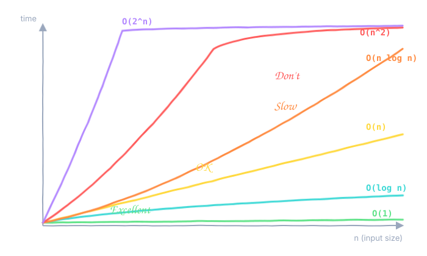
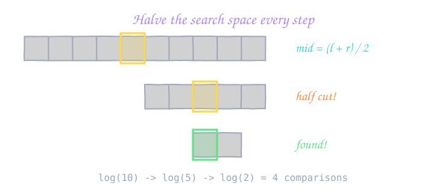
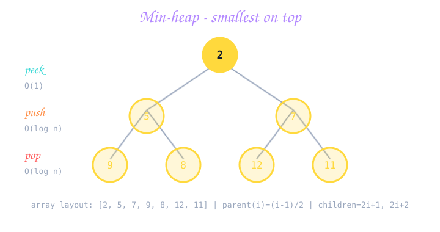
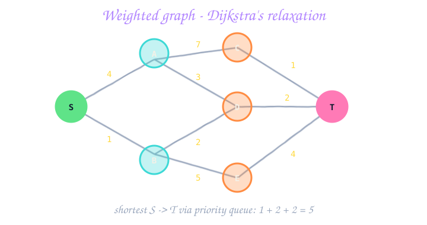
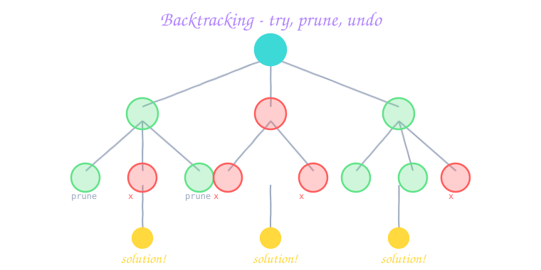
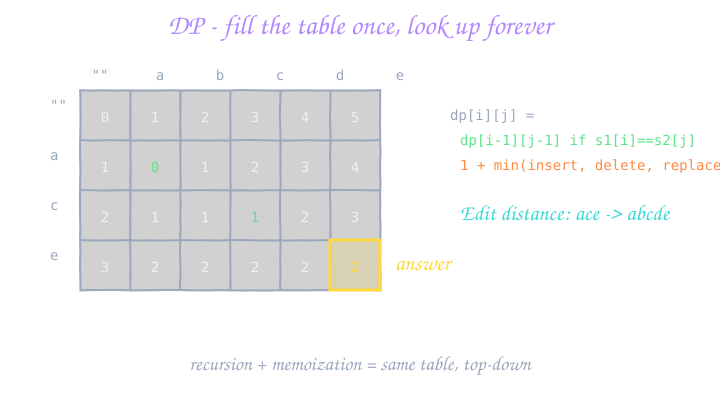
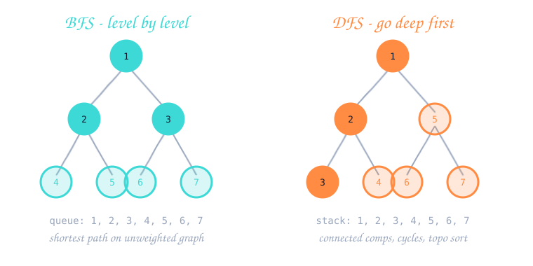
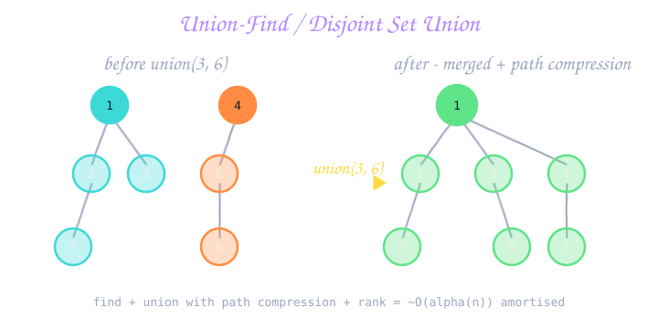

01 What is DSA & why do we learn it? Two short words that decide whether you get the job. ▾
Imagine your backpack
You carry a laptop, charger, notebook, pens, and a water bottle. If you throw everything loose into one big compartment, finding your charger in a hurry is painful. But if you have separate sleeves — one for the laptop, one for the bottle, a small pen-pouch — the same task takes 2 seconds.
That's data structures. The bag is your computer's memory. The compartments are different ways to organise the same information. Choose wrong, your program is slow. Choose right, it's instant.
And what's an algorithm?
An algorithm is a step-by-step recipe. "How do I find a particular book on a shelf?" is the question. The recipe could be:
- Linear search: Look at every book one by one. Works always, but slow.
- Binary search: If the books are sorted alphabetically, open the middle one, decide left or right, repeat. Lightning fast — but only works because the books are sorted.
The recipe you can use depends on the structure you picked. DS and algorithms are joined at the hip.
Why every interviewer asks DSA
What they test
Problem solving: Can you break a fuzzy real-world task into clean steps?
Efficiency thinking: Do you reach for the cheapest tool, not the first tool?
Code under pressure: Can you write bug-free code in 25 minutes?
Communication: Can you explain what you're doing while doing it?
What they DON'T test
Memory: They don't care if you remember the syntax of every STL function.
Trivia: "Who invented quicksort?" — nobody asks.
Library tricks: Using a fancy framework won't save you here.
Speed-typing: Slowing down to think is rewarded, not punished.
The vocabulary in one paragraph
A data structure is a layout in memory: array, linked list, stack, queue, hash map, tree, graph. An algorithm is a procedure that runs on a data structure: search, sort, traverse, find shortest path. Complexity (Big-O, next lesson) is how we measure how good an algorithm is. Patterns are reusable shapes — if you've seen 5 problems that all needed a sliding window, the 6th screams "sliding window" before you finish reading it.
02 Time & Space Complexity (Big-O) How to say "this is fast" using one symbol. ▾
O(n) means "double the input, double the time". O(n²) means "double the input, four times the time".The cafeteria analogy
You are buying lunch coupons for everyone on your team.
- O(1) - constant: The cafeteria sells a "whole team pack" for one fixed price. 5 people or 50 people — same effort.
- O(log n) - logarithmic: You ask the cashier to split the team into halves, then halves again, and only the smaller half pays. Even for 1000 people it takes ~10 splits. Crazy fast.
- O(n) - linear: You stand in line and pay for each teammate one by one. 50 teammates = 50 payments.
- O(n log n) - linearithmic: Each teammate pays, but they also help sort the team roster — a tiny extra log-n work per person. Still very acceptable.
- O(n²) - quadratic: For every teammate, you check their coupon against every other teammate's coupon. 50 teammates = 2500 checks. Ouch.
- O(2n) - exponential: You try every possible subset of the team. 30 people → a billion subsets. The cafeteria closes before you finish.

The ladder (memorise the order)
| Big-O | Vibe | Typical algorithm | n = 106 |
|---|---|---|---|
O(1) | instant | hash lookup, array index | ~ns |
O(log n) | excellent | binary search, balanced tree | ~20 steps |
O(n) | linear | one pass over data | ~1M steps |
O(n log n) | very good | good sorts, heap ops | ~20M steps |
O(n²) | ok if n < 104 | two nested loops | ~1012 — TLE |
O(2n) | brute subsets | backtracking | won't finish |
O(n!) | brute permute | brute TSP | won't finish |
How to compute Big-O in 30 seconds
- Find every loop. One loop over
nis O(n). Two nested loops = O(n×n) = O(n²). - Recursive calls: count the call tree. Each call spawns 2 sub-calls and depth is
n? O(2n). - Drop the constants:
5n + 100is justO(n).n² + nisO(n²). - Space = the biggest extra memory you allocate (helper array, hash map, recursion stack).
The 108 rule
Modern judges do about 108 simple operations per second. Multiply your Big-O by the input size. If the answer is bigger than 108, your code will TLE. Always do this multiplication before coding.
Space matters too
Time is usually the bottleneck, but space hides bugs. An O(n) hash map on 1 billion items will crash the JVM. A recursion 100,000 deep will stack-overflow. Always state both.
str + str is O(n). In Python list.insert(0, x) is O(n). In C++ vector.erase(begin) is O(n). When a "single line" sits inside a loop, check what it actually costs.Quick recognition by constraint
| If n is at most… | Aim for |
|---|---|
| 10 | O(n!) backtracking |
| 20 | O(2n) bitmask |
| 500 | O(n³) |
| 5,000 | O(n²) |
| 105 | O(n log n) |
| 106 | O(n) |
| 109 | O(log n) or pure math |
03 Recursion — thinking in dolls A function that politely asks itself for help. ▾
The matryoshka doll
You know those Russian dolls that hide a smaller doll inside? Open the doll — smaller doll. Open that — even smaller. At some point you reach the tiniest doll which has nothing inside. That's recursion: every call hides a slightly smaller call, until you hit the tiny base case.
Skeleton you'll write 1000 times
ReturnType solve(args) {
if (base_case_reached) return trivial_answer; // STOP
// make the problem smaller
auto sub = solve(smaller_args);
return combine(sub, args);
}ReturnType solve(Args args) {
if (baseCaseReached) return trivialAnswer;
var sub = solve(smallerArgs);
return combine(sub, args);
}def solve(args):
if base_case_reached:
return trivial_answer
sub = solve(smaller_args)
return combine(sub, args)Worked example 1 — Factorial
5! = 5 × 4 × 3 × 2 × 1 = 120. The trick: n! = n × (n-1)!. The base case: 0! = 1.
long long fact(int n) {
if (n <= 1) return 1; // base case
return (long long)n * fact(n - 1); // smaller call
}long fact(int n) {
if (n <= 1) return 1;
return (long) n * fact(n - 1);
}def fact(n):
if n <= 1:
return 1
return n * fact(n - 1)Worked example 2 — Fibonacci (and a warning)
fib(n) = fib(n-1) + fib(n-2), base cases fib(0)=0, fib(1)=1. Beautifully short. Also disastrously slow — fib(40) takes seconds because the same sub-call is repeated millions of times.
int fib(int n) {
if (n < 2) return n;
return fib(n - 1) + fib(n - 2); // O(2^n) - way too slow
}int fib(int n) {
if (n < 2) return n;
return fib(n - 1) + fib(n - 2);
}def fib(n):
if n < 2:
return n
return fib(n - 1) + fib(n - 2)We fix this with memoisation (cache the answers) in Lesson 21. That's actually how Dynamic Programming is born.
Recursion has a price
Every call sits on a stack of pending calls. If recursion goes 1 million deep, you run out of stack memory. Watch for:
- Java/C++: ~10,000–100,000 default stack frames. Bigger? Use iteration or increase JVM stack.
- Python: default limit 1000. Raise with
sys.setrecursionlimit(10**6). - Tail recursion: Some languages turn it into a loop. C++/Java/Python do not, so don't rely on it.
How to think recursively (the 3 questions)
- What is the base case? The smallest input where the answer is obvious.
- What is the recursive case? Express
f(n)in terms off(smaller). - Trust the recursion. Assume
f(smaller)returns the right answer. Don't trace it all the way down — you'll go mad.
Practice
04 Math you actually need GCD, primes, modular arithmetic, fast power — the rest is optional. ▾
1. GCD — Euclid's algorithm
"What is the largest number that divides both 24 and 36?" Answer: 12. Doing this for huge numbers is fast: gcd(a, b) = gcd(b, a mod b), until b == 0. Time: O(log min(a, b)).
int gcd(int a, int b) {
while (b) { a %= b; swap(a, b); }
return a;
}
// or just: __gcd(a, b); in <algorithm>int gcd(int a, int b) {
while (b != 0) { int t = a % b; a = b; b = t; }
return a;
}from math import gcd # built-in is fastest
# or hand-rolled:
def my_gcd(a, b):
while b:
a, b = b, a % b
return aLCM ("smallest common multiple") follows for free: lcm(a, b) = a / gcd(a, b) * b. Divide before multiply to avoid overflow.
2. Primes — Sieve of Eratosthenes
Need every prime up to N? Don't test each number for divisibility (too slow). Instead, write 2..N on a board, circle 2, cross out all multiples of 2, circle the next uncircled number (3), cross out its multiples, repeat. What survives is prime. Time: O(N log log N).
vector<bool> sieve(int N) {
vector<bool> isP(N + 1, true);
isP[0] = isP[1] = false;
for (int i = 2; (long long)i * i <= N; ++i)
if (isP[i])
for (int j = i * i; j <= N; j += i)
isP[j] = false;
return isP;
}boolean[] sieve(int N) {
boolean[] isP = new boolean[N + 1];
Arrays.fill(isP, true);
isP[0] = isP[1] = false;
for (int i = 2; (long) i * i <= N; i++)
if (isP[i])
for (int j = i * i; j <= N; j += i)
isP[j] = false;
return isP;
}def sieve(N):
is_p = [True] * (N + 1)
is_p[0] = is_p[1] = False
for i in range(2, int(N ** 0.5) + 1):
if is_p[i]:
for j in range(i * i, N + 1, i):
is_p[j] = False
return is_pFor a single primality test on one number n, just try divisors up to √n:
bool isPrime(long long n) {
if (n < 2) return false;
for (long long i = 2; i * i <= n; ++i)
if (n % i == 0) return false;
return true;
}boolean isPrime(long n) {
if (n < 2) return false;
for (long i = 2; i * i <= n; i++)
if (n % i == 0) return false;
return true;
}def is_prime(n):
if n < 2: return False
i = 2
while i * i <= n:
if n % i == 0: return False
i += 1
return True3. Modular arithmetic — the % operator
Problems often say "answer modulo 109+7". This stops huge numbers from overflowing. The rules:
(a + b) % m = ((a % m) + (b % m)) % m(a - b) % m = ((a % m) - (b % m) + m) % m— addmto handle negatives.(a * b) % m = ((a % m) * (b % m)) % m— uselong longin C++/Java for the multiply.- Division is not just
(a / b) % m. You need a modular inverse (advanced; usually given as a hint).
4. Fast exponentiation (a^b in log b time)
To compute 2^60, multiplying 60 times is fine. To compute 2^(1018) modulo something, multiplying that many times is impossible. Binary exponentiation: square the base, halve the exponent.
long long power(long long a, long long b, long long m) {
long long res = 1 % m;
a %= m;
while (b > 0) {
if (b & 1) res = res * a % m;
a = a * a % m;
b >>= 1;
}
return res;
}long power(long a, long b, long m) {
long res = 1 % m;
a %= m;
while (b > 0) {
if ((b & 1) == 1) res = res * a % m;
a = a * a % m;
b >>= 1;
}
return res;
}# Python has it built-in!
ans = pow(a, b, m) # exactly the same idea, log b timePractice
05 Arrays — the row of lockers The most-used data structure in the universe. ▾
i in one step using simple arithmetic. That's why array access is O(1).The locker-row analogy
Picture a long corridor in a gym. Lockers numbered 0, 1, 2, ... 99 are in a perfect straight line. You don't have to walk past lockers 0–42 to reach locker 43 — you know its position from the number. That's random access. Inserting a new locker between 5 and 6, though, means dragging lockers 6–99 one step to the right. That's why insert/delete in the middle is O(n).
What you can do, and what it costs
| Operation | Cost | Why |
|---|---|---|
Access a[i] | O(1) | direct address calculation |
| Search (unsorted) | O(n) | linear scan |
| Search (sorted) | O(log n) | binary search |
| Insert at end (dynamic array) | O(1)* | amortised across resizes |
| Insert / delete in middle | O(n) | shift everything |
| Append n elements | O(n) | amortised |
Fixed vs dynamic arrays
A fixed array's size is decided at creation (int a[100]). A dynamic array can grow: vector in C++, ArrayList in Java, list in Python. When the underlying storage runs out, the runtime allocates a bigger block (usually 2×), copies everything over, and continues. That copy is what makes append amortised O(1) — almost always cheap, occasionally expensive.
Creating, reading, writing
#include <vector>
vector<int> a = {3, 1, 4, 1, 5};
a.push_back(9); // append
a[2] = 100; // overwrite
int n = a.size();
for (int i = 0; i < n; ++i)
cout << a[i] << ' ';
// range-for shortcut
for (int x : a) cout << x << ' ';import java.util.*;
List<Integer> a = new ArrayList<>(List.of(3, 1, 4, 1, 5));
a.add(9);
a.set(2, 100);
for (int i = 0; i < a.size(); i++) System.out.print(a.get(i) + " ");
for (int x : a) System.out.print(x + " ");
// fixed-size primitive array
int[] b = { 3, 1, 4, 1, 5 };
b[2] = 100;a = [3, 1, 4, 1, 5]
a.append(9)
a[2] = 100
for x in a:
print(x, end=' ')
# slicing - super handy
sub = a[1:4] # [1, 4, 1]
rev = a[::-1] # reversed copyThe classic tricks every interview tests
- Reverse — two pointers from both ends, swap, move inward.
- Rotate by k — reverse whole array, then reverse first k, then reverse rest.
- Prefix sum —
pre[i] = pre[i-1] + a[i]lets you query any range sum in O(1). - Sliding window — for "longest / shortest / sum of subarray" problems.
- Two pointers — for sorted arrays seeking a pair or partition.
Prefix sum — the cheap trick
vector<long long> pre(n + 1, 0);
for (int i = 0; i < n; ++i) pre[i + 1] = pre[i] + a[i];
// sum of a[l..r] (inclusive) = pre[r+1] - pre[l]long[] pre = new long[n + 1];
for (int i = 0; i < n; i++) pre[i + 1] = pre[i] + a[i];
// rangeSum(l, r) = pre[r + 1] - pre[l];pre = [0] * (n + 1)
for i, x in enumerate(a):
pre[i + 1] = pre[i] + x
# sum(a[l..r]) = pre[r + 1] - pre[l]- Off-by-one:
for (i = 0; i <= n; ...)reads past the end — crash or garbage. - Inserting in a loop:
a.insert(0, x)n times = O(n²). Append, then reverse. - Using
contains()on a list inside a loop — that's O(n) per call. Use aset.
Practice
06 Strings — text as a special array Just an array of characters, but with a few sharp edges. ▾
The "necklace of beads" mental model
Imagine a necklace with letters threaded as beads. Each bead is one character. You can read any bead by its position. To change a bead in Java/Python you must take the whole necklace apart, swap the bead, and re-thread — expensive! In C++ you can just yank the bead out and snap a new one in — cheap.
The immutability tax
string s = "hello";
s[0] = 'H'; // in place, O(1)
s += " world"; // appends, O(n) amortised
s.push_back('!'); // O(1) amortisedString s = "hello";
// s.charAt(0) = 'H'; // DOES NOT COMPILE - strings are immutable
// BAD: O(n^2)
String out = "";
for (int i = 0; i < n; i++) out += "x";
// GOOD: O(n) using StringBuilder
StringBuilder sb = new StringBuilder();
for (int i = 0; i < n; i++) sb.append('x');
String good = sb.toString();s = "hello"
# s[0] = 'H' # TypeError - strings are immutable
# BAD: O(n^2)
out = ""
for ch in "abcdefgh":
out += ch
# GOOD: O(n) - build a list, then join
parts = []
for ch in "abcdefgh":
parts.append(ch)
good = "".join(parts)Operations & costs
| Operation | Cost |
|---|---|
| Access char at index | O(1) |
| Length | O(1) |
| Concatenate (cumulative in a loop) | O(n²) without builder |
| Concatenate with StringBuilder / join | O(n) total |
| Substring of length L | O(L) |
| Find substring (built-in) | O(n × m) worst |
| Find substring (KMP / Z) | O(n + m) |
| Hash of full string | O(n) |
The 5 string tricks you must know
- Char frequency: a 26-int array (a-z) or a HashMap.
- Two-pointer palindrome: while
l < r, compare and move inward. - Sliding window: longest substring with property X.
- Reverse: two pointers + swap, or built-in.
- Anagram: sort both, or compare frequency maps.
Palindrome check (two-pointer)
bool isPalindrome(const string& s) {
int l = 0, r = (int)s.size() - 1;
while (l < r) {
if (s[l] != s[r]) return false;
l++; r--;
}
return true;
}boolean isPalindrome(String s) {
int l = 0, r = s.length() - 1;
while (l < r) {
if (s.charAt(l) != s.charAt(r)) return false;
l++; r--;
}
return true;
}def is_palindrome(s):
return s == s[::-1] # one-liner
# or manual two-pointer:
def is_palindrome_tp(s):
l, r = 0, len(s) - 1
while l < r:
if s[l] != s[r]: return False
l += 1; r -= 1
return TrueAnagram check (count letters)
bool anagram(const string& a, const string& b) {
if (a.size() != b.size()) return false;
int cnt[26] = {0};
for (char c : a) cnt[c - 'a']++;
for (char c : b) if (--cnt[c - 'a'] < 0) return false;
return true;
}boolean anagram(String a, String b) {
if (a.length() != b.length()) return false;
int[] cnt = new int[26];
for (char c : a.toCharArray()) cnt[c - 'a']++;
for (char c : b.toCharArray()) if (--cnt[c - 'a'] < 0) return false;
return true;
}from collections import Counter
def anagram(a, b):
return Counter(a) == Counter(b)- Java:
==on strings compares references! Always use.equals(). - Python:
s[i] = 'x'raises an error. Convert to list, mutate, then"".join(...). - C++:
substr(i, L)copies L chars (O(L)). Inside a loop = O(n²).
Practice
07 Linked Lists — singly, doubly, circular Each box knows where the next box is. No row needed. ▾
The treasure-hunt analogy
You hide a prize somewhere in the office. Instead of telling people "the prize is in meeting-room 17", you give them a chain of clues: "Start at the reception. On the reception desk is a sticky-note saying go to the library. In the library is a note saying go to the cafeteria. In the cafeteria is the prize." Each clue points to the next location. You don't know how far the prize is until you've followed every clue. That's a linked list.
The three flavours
Singly linked
Each node has data + next. You can only move forward. Cheap, uses least memory, hardest to delete arbitrary nodes (you need the previous one).
Doubly linked
Each node also has prev. You can move in both directions. Easier to delete any node in O(1) once you have it. Costs an extra pointer per node.
Circular: the last node's next points back to the first node, forming a ring. Useful for round-robin scheduling or fixed-size buffers.
Costs (compare to arrays!)
| Operation | Array | Linked list |
|---|---|---|
| Access index i | O(1) | O(n) |
| Insert at front | O(n) | O(1) |
| Insert at end (with tail pointer) | O(1)* | O(1) |
| Insert / delete given the node | O(n) | O(1) |
| Search by value | O(n) | O(n) |
| Memory per element | just data | data + 1-2 pointers |
The node class
struct ListNode {
int val;
ListNode* next;
ListNode(int v) : val(v), next(nullptr) {}
};class ListNode {
int val;
ListNode next;
ListNode(int v) { this.val = v; }
}class ListNode:
def __init__(self, val=0, nxt=None):
self.val = val
self.next = nxtThe "must know" operation: reverse a linked list
Asked at every FAANG company at least once. Three pointers: prev (where to point next to), curr (the node we're flipping), next (saved so we don't lose the rest).
ListNode* reverse(ListNode* head) {
ListNode *prev = nullptr, *curr = head;
while (curr) {
ListNode* nxt = curr->next;
curr->next = prev;
prev = curr;
curr = nxt;
}
return prev; // new head
}ListNode reverse(ListNode head) {
ListNode prev = null, curr = head;
while (curr != null) {
ListNode nxt = curr.next;
curr.next = prev;
prev = curr;
curr = nxt;
}
return prev;
}def reverse(head):
prev, curr = None, head
while curr:
nxt = curr.next
curr.next = prev
prev = curr
curr = nxt
return prevDetect a cycle (Floyd's tortoise & hare)
Two pointers move through the list — slow takes 1 step, fast takes 2. If there's a cycle, fast eventually laps slow and they meet. If fast hits null, no cycle.
bool hasCycle(ListNode* head) {
ListNode *slow = head, *fast = head;
while (fast && fast->next) {
slow = slow->next;
fast = fast->next->next;
if (slow == fast) return true;
}
return false;
}boolean hasCycle(ListNode head) {
ListNode slow = head, fast = head;
while (fast != null && fast.next != null) {
slow = slow.next;
fast = fast.next.next;
if (slow == fast) return true;
}
return false;
}def has_cycle(head):
slow = fast = head
while fast and fast.next:
slow = slow.next
fast = fast.next.next
if slow is fast:
return True
return FalseWhen to use a linked list (and when NOT to)
Use it when
You need O(1) inserts at the front or middle and you already have the node.
You're building higher structures: stack, queue, LRU cache, adjacency list of a graph.
The problem literally says "linked list".
Don't use it when
You need a[i] by index — that's O(n).
You want cache-friendly iteration — arrays beat lists by 10× on modern hardware.
Memory matters and you don't need middle-insert — an array uses less.
next is the real head. Now you don't need a special case for the head — the dummy's next at the end is your answer.Practice
08 Stacks — plates in a kitchen Last in, first out (LIFO). ▾
The plates analogy
In your kitchen, you stack clean plates on top of each other. To use one, you take the top plate — not one from the middle (the whole stack would tumble). When you wash a new plate, you place it on top. The plate that just went on is the next to come off. Last In, First Out.
The 3 operations
push(x)— put x on top. O(1).pop()— remove and return the top. O(1).top()/peek()— look at the top without removing. O(1).
How to make one
#include <stack>
stack<int> st;
st.push(1); st.push(2); st.push(3);
cout << st.top(); // 3
st.pop();
cout << st.top(); // 2
cout << st.size(); // 2
cout << st.empty(); // 0 (false)// Prefer ArrayDeque over Stack (legacy, synchronized)
Deque<Integer> st = new ArrayDeque<>();
st.push(1); st.push(2); st.push(3);
System.out.println(st.peek()); // 3
st.pop();
System.out.println(st.peek()); // 2st = [] # a list IS a stack in Python
st.append(1); st.append(2); st.append(3)
print(st[-1]) # 3
st.pop()
print(st[-1]) # 2Killer use #1 — Balanced brackets
Push every opening bracket. When you see a closing bracket, pop and check it matches.
bool isValid(string s) {
stack<char> st;
unordered_map<char,char> m = {{')','('},{']','['},{'}','{'}};
for (char c : s) {
if (m.count(c)) { // closing
if (st.empty() || st.top() != m[c]) return false;
st.pop();
} else {
st.push(c);
}
}
return st.empty();
}boolean isValid(String s) {
Deque<Character> st = new ArrayDeque<>();
for (char c : s.toCharArray()) {
if (c == '(') st.push(')');
else if (c == '[') st.push(']');
else if (c == '{') st.push('}');
else if (st.isEmpty() || st.pop() != c) return false;
}
return st.isEmpty();
}def is_valid(s):
st = []
pair = {')': '(', ']': '[', '}': '{'}
for c in s:
if c in pair:
if not st or st.pop() != pair[c]: return False
else:
st.append(c)
return not stKiller use #2 — Monotonic stack ("next greater element")
For each item, find the next item to its right that is greater. Brute force is O(n²). A stack that stays in decreasing order from bottom to top gives you O(n).
vector<int> nextGreater(vector<int>& a) {
int n = a.size();
vector<int> ans(n, -1);
stack<int> st; // stack of indices
for (int i = 0; i < n; ++i) {
while (!st.empty() && a[st.top()] < a[i]) {
ans[st.top()] = a[i];
st.pop();
}
st.push(i);
}
return ans;
}int[] nextGreater(int[] a) {
int n = a.length;
int[] ans = new int[n];
Arrays.fill(ans, -1);
Deque<Integer> st = new ArrayDeque<>();
for (int i = 0; i < n; i++) {
while (!st.isEmpty() && a[st.peek()] < a[i])
ans[st.pop()] = a[i];
st.push(i);
}
return ans;
}def next_greater(a):
n = len(a)
ans = [-1] * n
st = []
for i, x in enumerate(a):
while st and a[st[-1]] < x:
ans[st.pop()] = x
st.append(i)
return ansWhere else stacks pop up
- Function calls: your program's call stack is a stack.
- Undo/redo: two stacks — one for history, one for redo.
- DFS without recursion: push the start node, pop, push neighbours, repeat.
- Largest Rectangle in Histogram (LC 84): monotonic stack of bar indices.
- Evaluate postfix / infix: classic compiler-design problem.
java.util.Stack class — it's synchronized and slow. ArrayDeque is the modern replacement and works the same way.Practice
09 Queues, Deques & Priority Queues A line at the canteen — FIFO, two-sided, or VIP-skip. ▾
Three lines, three rules
Queue (FIFO)
People line up at the canteen. The first to arrive is the first to be served. Used for: BFS, scheduling, buffering.
Operations: enqueue / push (back), dequeue / pop (front), front / peek.
Deque (double-ended)
People can join or leave from either end. Used for: sliding-window maximum, palindrome checks, undo systems.
Operations: push_front, push_back, pop_front, pop_back.
Priority queue: imagine a hospital. Patients arrive in any order, but the most critical one is treated first. The "priority" is decided by a key — smallest first (min-heap) or largest first (max-heap). All operations are O(log n).
Operations & costs
| Structure | Push back | Pop front | Push front | Pop back | Get min/max |
|---|---|---|---|---|---|
| Queue | O(1) | O(1) | — | — | — |
| Deque | O(1) | O(1) | O(1) | O(1) | — |
| Priority queue | O(log n) | O(log n) | — | — | O(1) peek |
Code — queue
#include <queue>
queue<int> q;
q.push(1); q.push(2); q.push(3);
cout << q.front(); // 1
q.pop();
cout << q.front(); // 2Queue<Integer> q = new ArrayDeque<>();
q.offer(1); q.offer(2); q.offer(3);
System.out.println(q.peek()); // 1
q.poll();
System.out.println(q.peek()); // 2from collections import deque
q = deque()
q.append(1); q.append(2); q.append(3)
print(q[0]) # 1
q.popleft()
print(q[0]) # 2Code — deque (sliding window max)
For each window of size k, return the max. With a deque holding indices in decreasing order of value, each index enters and leaves once → O(n).
vector<int> maxWindow(vector<int>& a, int k) {
deque<int> dq; // indices, values decreasing
vector<int> out;
for (int i = 0; i < (int)a.size(); ++i) {
while (!dq.empty() && dq.front() <= i - k) dq.pop_front();
while (!dq.empty() && a[dq.back()] < a[i]) dq.pop_back();
dq.push_back(i);
if (i >= k - 1) out.push_back(a[dq.front()]);
}
return out;
}int[] maxWindow(int[] a, int k) {
Deque<Integer> dq = new ArrayDeque<>();
int n = a.length;
int[] out = new int[n - k + 1];
for (int i = 0; i < n; i++) {
while (!dq.isEmpty() && dq.peekFirst() <= i - k) dq.pollFirst();
while (!dq.isEmpty() && a[dq.peekLast()] < a[i]) dq.pollLast();
dq.offerLast(i);
if (i >= k - 1) out[i - k + 1] = a[dq.peekFirst()];
}
return out;
}from collections import deque
def max_window(a, k):
dq, out = deque(), []
for i, x in enumerate(a):
while dq and dq[0] <= i - k: dq.popleft()
while dq and a[dq[-1]] < x: dq.pop()
dq.append(i)
if i >= k - 1: out.append(a[dq[0]])
return outCode — priority queue (min-heap)
// max-heap by default
priority_queue<int> maxH;
maxH.push(5); maxH.push(1); maxH.push(7);
cout << maxH.top(); // 7
// min-heap
priority_queue<int, vector<int>, greater<int>> minH;
minH.push(5); minH.push(1); minH.push(7);
cout << minH.top(); // 1// min-heap by default
PriorityQueue<Integer> minH = new PriorityQueue<>();
minH.offer(5); minH.offer(1); minH.offer(7);
System.out.println(minH.peek()); // 1
// max-heap with comparator
PriorityQueue<Integer> maxH = new PriorityQueue<>((a, b) -> b - a);
maxH.offer(5); maxH.offer(1); maxH.offer(7);
System.out.println(maxH.peek()); // 7import heapq
h = []
heapq.heappush(h, 5)
heapq.heappush(h, 1)
heapq.heappush(h, 7)
print(h[0]) # 1 - min-heap only
# max-heap trick: push negatives
mx = []
for x in [5, 1, 7]:
heapq.heappush(mx, -x)
print(-mx[0]) # 7Practice
10 Hash Tables — the dictionary trick Look anything up in (almost) constant time. ▾
The textbook-index analogy
At the back of every textbook there's an index: "Algebra ... 45, Triangles ... 102". You don't flip every page hunting for "Triangles" — you jump straight to page 102. That's hashing. The word is the key, the page number is the value, and the textbook-index author has done the "hashing" work for you.
The two flavours
- HashSet — stores only keys. "Have I seen this before?" is the question.
setin Python,unordered_setin C++,HashSetin Java. - HashMap — stores key → value. "What was the index of x?" "How many times did I see x?".
dictin Python,unordered_mapin C++,HashMapin Java.
Costs
| Operation | Average | Worst |
|---|---|---|
| Insert | O(1) | O(n) (lots of collisions) |
| Lookup | O(1) | O(n) |
| Delete | O(1) | O(n) |
| Iterate all | O(n) | O(n) |
Sorted variants (TreeMap in Java, map in C++) give O(log n) but keep keys ordered — great when you need floor/ceiling queries.
How the hash function works (mental model)
Imagine you have 10 boxes labelled 0–9. To store the word "apple", compute hash("apple") = sum_of_char_codes % 10. Maybe that's 4. Put ("apple", value) in box 4. To look up "apple" later, recompute the hash — box 4, found it. If two different words hash to box 4, store both in a small list inside box 4 (chaining). The hash table resizes (doubles + rehashes) when boxes get too full.
Three killer use cases
1. Two Sum — "have I seen the complement?"
vector<int> twoSum(vector<int>& a, int target) {
unordered_map<int,int> seen; // value -> index
for (int i = 0; i < (int)a.size(); ++i) {
int need = target - a[i];
if (seen.count(need)) return {seen[need], i};
seen[a[i]] = i;
}
return {};
}int[] twoSum(int[] a, int target) {
Map<Integer, Integer> seen = new HashMap<>();
for (int i = 0; i < a.length; i++) {
int need = target - a[i];
if (seen.containsKey(need)) return new int[]{ seen.get(need), i };
seen.put(a[i], i);
}
return new int[0];
}def two_sum(a, target):
seen = {}
for i, x in enumerate(a):
need = target - x
if need in seen: return [seen[need], i]
seen[x] = i2. Frequency counter — "how many of each?"
unordered_map<string,int> cnt;
for (auto& w : words) cnt[w]++;
// cnt["the"] == number of times "the" appearedMap<String, Integer> cnt = new HashMap<>();
for (String w : words) cnt.merge(w, 1, Integer::sum);from collections import Counter
cnt = Counter(words) # done!3. Dedup — "give me unique values"
unordered_set<int> uniq(a.begin(), a.end());Set<Integer> uniq = new HashSet<>(Arrays.asList(arr));uniq = set(a)- Java: A custom class as a key MUST override
hashCode()andequals()together. Forget either → silent bugs. - C++:
unordered_map's[]creates the key if absent. Usecount()orfind()when you just want to check. - Python: Mutable types (list, dict) can't be hash-map keys. Use a tuple or frozenset.
- Order: hash maps are unordered. If you need sorted iteration, use TreeMap (Java),
map(C++), orsorted(d.items())in Python.
Practice
11 Linear vs Binary Search From "look at every page" to "open the middle". ▾
The "guess my number" game
I think of a number between 1 and 100. You guess; I say "higher" or "lower". A smart player always guesses the middle (50, then 25 or 75, then halve again, ...). 100 numbers needs at most 7 guesses. That's binary search. A clueless player guesses 1, 2, 3, ... — that's linear search, up to 100 guesses.

Linear search
int linearSearch(vector<int>& a, int target) {
for (int i = 0; i < (int)a.size(); ++i)
if (a[i] == target) return i;
return -1;
}int linearSearch(int[] a, int target) {
for (int i = 0; i < a.length; i++)
if (a[i] == target) return i;
return -1;
}def linear_search(a, target):
for i, x in enumerate(a):
if x == target: return i
return -1Binary search (classic)
Maintain lo and hi — the inclusive search range. Compare the middle to the target. If equal, done. If too big, drop the right half. If too small, drop the left half.
int binarySearch(vector<int>& a, int target) {
int lo = 0, hi = (int)a.size() - 1;
while (lo <= hi) {
int mid = lo + (hi - lo) / 2; // avoid overflow
if (a[mid] == target) return mid;
if (a[mid] < target) lo = mid + 1;
else hi = mid - 1;
}
return -1;
}int binarySearch(int[] a, int target) {
int lo = 0, hi = a.length - 1;
while (lo <= hi) {
int mid = lo + (hi - lo) / 2;
if (a[mid] == target) return mid;
if (a[mid] < target) lo = mid + 1;
else hi = mid - 1;
}
return -1;
}def binary_search(a, target):
lo, hi = 0, len(a) - 1
while lo <= hi:
mid = (lo + hi) // 2
if a[mid] == target: return mid
if a[mid] < target: lo = mid + 1
else: hi = mid - 1
return -1Binary search on the answer (the secret weapon)
Binary search isn't only for sorted arrays. Anywhere you can ask "is X too small? just right? too big?" in O(f(n)), you can binary-search the answer in O(log range · f(n)). This unlocks problems like "Koko Eating Bananas" (LC 875), "Capacity to Ship Packages" (LC 1011), "Split Array Largest Sum" (LC 410).
(lo + hi) / 2can overflow with huge ints in C++/Java. Uselo + (hi - lo) / 2.- Mixing
<and<=withmidvsmid+1→ infinite loops. Pick one template and stick to it. - If the predicate is monotonic-true-then-false, flip the comparison or you'll converge on the wrong side.
Built-ins (use them in real code, hand-roll in interviews)
| Language | Function | Returns |
|---|---|---|
| C++ | lower_bound(a.begin(), a.end(), x) | iterator to first ≥ x |
| C++ | upper_bound(...) | iterator to first > x |
| Java | Arrays.binarySearch(a, x) | index, or -(ins+1) if absent |
| Python | bisect.bisect_left(a, x) | insertion index keeping order |
Practice
12 Simple sorts: Bubble, Selection, Insertion The training-wheel sorts — learn the mechanics here. ▾
Mental model: arranging cards in your hand
You've been dealt 7 unsorted cards. Three ways to sort them:
- Bubble: compare card #1 with #2, swap if needed. Then #2 with #3. Repeat to the end. Then start again. The biggest card "bubbles" to the right end each pass.
- Selection: scan the whole hand, find the smallest card, put it in position #1. Scan the rest, find the smallest, put it in position #2. And so on.
- Insertion: hold card #1 sorted. Pick up card #2 — slide it left into the sorted prefix until it sits in the right place. Pick up #3, slide. This is how most people actually sort cards.
Bubble sort
void bubbleSort(vector<int>& a) {
int n = a.size();
for (int i = 0; i < n - 1; ++i) {
bool swapped = false;
for (int j = 0; j < n - 1 - i; ++j) {
if (a[j] > a[j + 1]) {
swap(a[j], a[j + 1]);
swapped = true;
}
}
if (!swapped) break; // already sorted - early exit
}
}void bubbleSort(int[] a) {
int n = a.length;
for (int i = 0; i < n - 1; i++) {
boolean swapped = false;
for (int j = 0; j < n - 1 - i; j++) {
if (a[j] > a[j + 1]) {
int t = a[j]; a[j] = a[j + 1]; a[j + 1] = t;
swapped = true;
}
}
if (!swapped) break;
}
}def bubble_sort(a):
n = len(a)
for i in range(n - 1):
swapped = False
for j in range(n - 1 - i):
if a[j] > a[j + 1]:
a[j], a[j + 1] = a[j + 1], a[j]
swapped = True
if not swapped: breakSelection sort
void selectionSort(vector<int>& a) {
int n = a.size();
for (int i = 0; i < n - 1; ++i) {
int mn = i;
for (int j = i + 1; j < n; ++j)
if (a[j] < a[mn]) mn = j;
if (mn != i) swap(a[i], a[mn]);
}
}void selectionSort(int[] a) {
int n = a.length;
for (int i = 0; i < n - 1; i++) {
int mn = i;
for (int j = i + 1; j < n; j++)
if (a[j] < a[mn]) mn = j;
int t = a[i]; a[i] = a[mn]; a[mn] = t;
}
}def selection_sort(a):
n = len(a)
for i in range(n - 1):
mn = i
for j in range(i + 1, n):
if a[j] < a[mn]: mn = j
a[i], a[mn] = a[mn], a[i]Insertion sort (the one that's actually useful)
O(n²) worst case but O(n) on nearly-sorted data — that's why standard libraries use it for tiny arrays.
void insertionSort(vector<int>& a) {
int n = a.size();
for (int i = 1; i < n; ++i) {
int key = a[i], j = i - 1;
while (j >= 0 && a[j] > key) {
a[j + 1] = a[j];
j--;
}
a[j + 1] = key;
}
}void insertionSort(int[] a) {
for (int i = 1; i < a.length; i++) {
int key = a[i], j = i - 1;
while (j >= 0 && a[j] > key) {
a[j + 1] = a[j];
j--;
}
a[j + 1] = key;
}
}def insertion_sort(a):
for i in range(1, len(a)):
key, j = a[i], i - 1
while j >= 0 and a[j] > key:
a[j + 1] = a[j]
j -= 1
a[j + 1] = keyComparison
| Sort | Best | Avg | Worst | Space | Stable? |
|---|---|---|---|---|---|
| Bubble | O(n) | O(n²) | O(n²) | O(1) | yes |
| Selection | O(n²) | O(n²) | O(n²) | O(1) | no |
| Insertion | O(n) | O(n²) | O(n²) | O(1) | yes |
Stable means: equal elements keep their original order. Crucial when sorting by a secondary key without disturbing the primary one.
Practice
13 Efficient sorts: Merge, Quick, Heap, Counting, Radix O(n log n) and the special-case O(n) sorts. ▾
O(n log n): Merge Sort (divide & conquer, stable, O(n) extra space), Quick Sort (divide & conquer, in-place, average O(n log n), worst O(n²)), Heap Sort (in-place, O(n log n) always). When values are tiny integers, Counting / Radix beat them all at O(n).1. Merge Sort — divide, sort, merge
Split the array into halves. Sort each half (recursion). Merge the two sorted halves by walking with two pointers. The merge is where the actual sorting happens.
void merge(vector<int>& a, int l, int m, int r) {
vector<int> tmp;
int i = l, j = m + 1;
while (i <= m && j <= r)
tmp.push_back(a[i] <= a[j] ? a[i++] : a[j++]);
while (i <= m) tmp.push_back(a[i++]);
while (j <= r) tmp.push_back(a[j++]);
for (int k = 0; k < (int)tmp.size(); ++k) a[l + k] = tmp[k];
}
void mergeSort(vector<int>& a, int l, int r) {
if (l >= r) return;
int m = l + (r - l) / 2;
mergeSort(a, l, m);
mergeSort(a, m + 1, r);
merge(a, l, m, r);
}void merge(int[] a, int l, int m, int r) {
int[] tmp = new int[r - l + 1];
int i = l, j = m + 1, k = 0;
while (i <= m && j <= r) tmp[k++] = a[i] <= a[j] ? a[i++] : a[j++];
while (i <= m) tmp[k++] = a[i++];
while (j <= r) tmp[k++] = a[j++];
System.arraycopy(tmp, 0, a, l, tmp.length);
}
void mergeSort(int[] a, int l, int r) {
if (l >= r) return;
int m = l + (r - l) / 2;
mergeSort(a, l, m);
mergeSort(a, m + 1, r);
merge(a, l, m, r);
}def merge_sort(a):
if len(a) <= 1: return a
m = len(a) // 2
left = merge_sort(a[:m])
right = merge_sort(a[m:])
out, i, j = [], 0, 0
while i < len(left) and j < len(right):
if left[i] <= right[j]: out.append(left[i]); i += 1
else: out.append(right[j]); j += 1
out += left[i:]; out += right[j:]
return out2. Quick Sort — pick a pivot, partition
Choose any element as the pivot. Rearrange so everything smaller is to its left, larger to its right. Recurse on both sides. Average O(n log n), worst O(n²) (when the pivot is always the smallest/largest). Use a random pivot or "median of three" to make worst case very unlikely.
int partition(vector<int>& a, int l, int r) {
int pivot = a[r]; // last element
int i = l - 1;
for (int j = l; j < r; ++j)
if (a[j] <= pivot) swap(a[++i], a[j]);
swap(a[i + 1], a[r]);
return i + 1;
}
void quickSort(vector<int>& a, int l, int r) {
if (l < r) {
int p = partition(a, l, r);
quickSort(a, l, p - 1);
quickSort(a, p + 1, r);
}
}int partition(int[] a, int l, int r) {
int pivot = a[r], i = l - 1;
for (int j = l; j < r; j++) {
if (a[j] <= pivot) {
i++;
int t = a[i]; a[i] = a[j]; a[j] = t;
}
}
int t = a[i + 1]; a[i + 1] = a[r]; a[r] = t;
return i + 1;
}
void quickSort(int[] a, int l, int r) {
if (l < r) {
int p = partition(a, l, r);
quickSort(a, l, p - 1);
quickSort(a, p + 1, r);
}
}import random
def quick_sort(a, l=0, r=None):
if r is None: r = len(a) - 1
if l >= r: return
p = random.randint(l, r)
a[p], a[r] = a[r], a[p]
pivot, i = a[r], l - 1
for j in range(l, r):
if a[j] <= pivot:
i += 1
a[i], a[j] = a[j], a[i]
a[i + 1], a[r] = a[r], a[i + 1]
quick_sort(a, l, i)
quick_sort(a, i + 2, r)3. Heap Sort — the in-place O(n log n)
Build a max-heap from the array (O(n)). Repeatedly: swap the root (max) with the last element, shrink the heap by 1, sift the new root down. Always O(n log n), no extra memory, but not stable. (Heap mechanics in Lesson 15.)
4. Counting Sort — when values are tiny integers
If all values are in [0, K], count occurrences in a size-K+1 array, then write them back in order. O(n + K). Great when K is small (e.g. ages, grades), terrible when K is huge.
void countingSort(vector<int>& a, int K) {
vector<int> cnt(K + 1, 0);
for (int x : a) cnt[x]++;
int idx = 0;
for (int v = 0; v <= K; ++v)
while (cnt[v]--) a[idx++] = v;
}void countingSort(int[] a, int K) {
int[] cnt = new int[K + 1];
for (int x : a) cnt[x]++;
int idx = 0;
for (int v = 0; v <= K; v++)
while (cnt[v]-- > 0) a[idx++] = v;
}def counting_sort(a, K):
cnt = [0] * (K + 1)
for x in a: cnt[x] += 1
idx = 0
for v, c in enumerate(cnt):
for _ in range(c):
a[idx] = v; idx += 15. Radix Sort — counting sort on each digit
Sort by least-significant digit first using a stable bucket sort, then the next digit, and so on. O(d · (n + b)) where d is number of digits and b is the base (usually 10 or 256). Fast for large integer arrays where K is too big for plain counting sort.
Comparison cheat sheet
| Sort | Avg | Worst | Space | Stable? | When to pick |
|---|---|---|---|---|---|
| Merge | O(n log n) | O(n log n) | O(n) | yes | need stability or sorting linked lists |
| Quick | O(n log n) | O(n²) | O(log n) | no | general-purpose, in place |
| Heap | O(n log n) | O(n log n) | O(1) | no | guaranteed bound + tiny memory |
| Counting | O(n + K) | O(n + K) | O(K) | yes | small integer range |
| Radix | O(d·n) | O(d·n) | O(n + b) | yes | fixed-width keys, no comparisons |
What the standard library uses
- C++
std::sort: Introsort — quicksort + heapsort fallback + insertion for tiny chunks. - Java
Arrays.sort(int[]): dual-pivot quicksort. For objects, TimSort (merge + insertion). - Python
sorted/list.sort: TimSort. Stable.
Practice
14 Trees & Binary Search Trees A family tree, but only the kids — and at most two each. ▾
The org-chart analogy
Picture any company's reporting structure: the CEO at the top, two VPs below, each VP has a handful of Directors, each Director has Managers, each Manager has individual contributors. That's a tree — clear hierarchy, no loops, exactly one path from the CEO to any employee. We use the same word in code, just flipped upside-down (root on top, leaves at the bottom).
Vocabulary in 10 words
- Root — the top node, no parent.
- Leaf — a node with no children.
- Height — longest path from root to any leaf.
- Depth of a node — distance from the root.
- Subtree — a node plus all its descendants.
- Balanced — left/right subtree heights differ by at most 1 at every node.
The node class
struct TreeNode {
int val;
TreeNode *left, *right;
TreeNode(int v) : val(v), left(nullptr), right(nullptr) {}
};class TreeNode {
int val;
TreeNode left, right;
TreeNode(int v) { this.val = v; }
}class TreeNode:
def __init__(self, val=0, left=None, right=None):
self.val = val
self.left = left
self.right = rightThe 4 traversals (memorise this)
You'll be asked at least one of these in 60% of interviews.
- Inorder (L → root → R): on a BST, gives sorted order.
- Preorder (root → L → R): useful for serialising / copying.
- Postorder (L → R → root): useful for deletion or sub-aggregates.
- Level order (BFS): visit all nodes at depth 0, then 1, then 2… uses a queue.
void inorder(TreeNode* r, vector<int>& out) {
if (!r) return;
inorder(r->left, out);
out.push_back(r->val);
inorder(r->right, out);
}
void preorder(TreeNode* r, vector<int>& out) {
if (!r) return;
out.push_back(r->val);
preorder(r->left, out);
preorder(r->right, out);
}
void postorder(TreeNode* r, vector<int>& out) {
if (!r) return;
postorder(r->left, out);
postorder(r->right, out);
out.push_back(r->val);
}
vector<vector<int>> levelOrder(TreeNode* r) {
vector<vector<int>> res;
if (!r) return res;
queue<TreeNode*> q; q.push(r);
while (!q.empty()) {
int sz = q.size();
vector<int> level;
while (sz--) {
TreeNode* n = q.front(); q.pop();
level.push_back(n->val);
if (n->left) q.push(n->left);
if (n->right) q.push(n->right);
}
res.push_back(level);
}
return res;
}void inorder(TreeNode r, List<Integer> out) {
if (r == null) return;
inorder(r.left, out);
out.add(r.val);
inorder(r.right, out);
}
List<List<Integer>> levelOrder(TreeNode r) {
List<List<Integer>> res = new ArrayList<>();
if (r == null) return res;
Deque<TreeNode> q = new ArrayDeque<>();
q.offer(r);
while (!q.isEmpty()) {
int sz = q.size();
List<Integer> level = new ArrayList<>();
for (int i = 0; i < sz; i++) {
TreeNode n = q.poll();
level.add(n.val);
if (n.left != null) q.offer(n.left);
if (n.right != null) q.offer(n.right);
}
res.add(level);
}
return res;
}def inorder(r, out):
if not r: return
inorder(r.left, out)
out.append(r.val)
inorder(r.right, out)
from collections import deque
def level_order(r):
if not r: return []
q, res = deque([r]), []
while q:
level = []
for _ in range(len(q)):
n = q.popleft()
level.append(n.val)
if n.left: q.append(n.left)
if n.right: q.append(n.right)
res.append(level)
return resBinary Search Tree (BST)
A binary tree where, for every node, left subtree < node.val < right subtree. Search/insert/delete become O(h) where h is the height. If balanced, h = log n, so all three operations are O(log n).
TreeNode* search(TreeNode* r, int x) {
while (r) {
if (x == r->val) return r;
r = (x < r->val) ? r->left : r->right;
}
return nullptr;
}
TreeNode* insert(TreeNode* r, int x) {
if (!r) return new TreeNode(x);
if (x < r->val) r->left = insert(r->left, x);
else r->right = insert(r->right, x);
return r;
}TreeNode search(TreeNode r, int x) {
while (r != null) {
if (x == r.val) return r;
r = (x < r.val) ? r.left : r.right;
}
return null;
}
TreeNode insert(TreeNode r, int x) {
if (r == null) return new TreeNode(x);
if (x < r.val) r.left = insert(r.left, x);
else r.right = insert(r.right, x);
return r;
}def search(r, x):
while r:
if x == r.val: return r
r = r.left if x < r.val else r.right
return None
def insert(r, x):
if not r: return TreeNode(x)
if x < r.val: r.left = insert(r.left, x)
else: r.right = insert(r.right, x)
return rBalanced vs unbalanced
A BST built by inserting 1, 2, 3, 4, 5 in order becomes a straight line — height = n, operations = O(n). Self-balancing trees fix this:
- AVL tree — height-balanced after every operation.
- Red-Black tree — balanced "enough", looser invariants but faster inserts. Used by Java
TreeMapand C++map.
You rarely implement these in interviews — you just use them via TreeMap / map for O(log n) sorted lookup.
Costs
| Operation | Balanced BST | Unbalanced (worst) |
|---|---|---|
| Search | O(log n) | O(n) |
| Insert | O(log n) | O(n) |
| Delete | O(log n) | O(n) |
| In-order traversal | O(n) | O(n) |
Practice
15 Heaps / Priority Queues A tree that always hands out its smallest (or largest) element first. ▾
push and pop are O(log n), peek is O(1). The go-to structure for "Top K", Dijkstra, "merge K sorted", and event scheduling.The to-do list analogy
You have 100 tasks ranked by deadline urgency. You don't sort all 100 every time a new task arrives — that's wasteful. Instead you keep them in a priority queue. When a new task arrives, slot it in cheaply. When you need the most urgent task, pull it off the top cheaply. That's exactly what a heap does, in O(log n) per operation.

How it lives in an array
The tree is "complete" (every level filled left-to-right), so we store it in a flat array. For index i:
- Parent:
(i - 1) / 2 - Left child:
2*i + 1 - Right child:
2*i + 2
Two operations — sift up, sift down
- Push: add to the end, then "sift up" — swap with parent while smaller. O(log n).
- Pop (remove min): swap root with last element, shrink size, then "sift down" the new root — swap with smaller child while larger. O(log n).
- Build heap from an array: sift-down every non-leaf from the bottom up — O(n) overall (counter-intuitive but true).
Use the language built-in (don't roll your own in interviews)
#include <queue>
priority_queue<int> maxH; // max-heap
priority_queue<int, vector<int>, greater<int>> minH; // min-heap
maxH.push(3); maxH.push(1); maxH.push(7);
cout << maxH.top(); // 7
maxH.pop();
// custom comparator (pair by second value, max-heap)
auto cmp = [](pair<int,int> a, pair<int,int> b){ return a.second < b.second; };
priority_queue<pair<int,int>, vector<pair<int,int>>, decltype(cmp)> pq(cmp);PriorityQueue<Integer> minH = new PriorityQueue<>(); // min-heap
PriorityQueue<Integer> maxH = new PriorityQueue<>((a, b) -> b - a);
minH.offer(3); minH.offer(1); minH.offer(7);
System.out.println(minH.peek()); // 1
minH.poll();
// heapify in O(n)
PriorityQueue<Integer> h = new PriorityQueue<>(Arrays.asList(3, 1, 4, 1, 5));import heapq
h = [3, 1, 4, 1, 5]
heapq.heapify(h) # O(n)
heapq.heappush(h, 0) # O(log n)
print(h[0]) # min element
heapq.heappop(h)
# max-heap trick: push negatives
mx = [-x for x in [3, 1, 4]]
heapq.heapify(mx)
print(-mx[0]) # 4Hand-rolled min-heap (for the interview where they ask)
class MinHeap {
vector<int> a;
void siftUp(int i) {
while (i > 0) {
int p = (i - 1) / 2;
if (a[p] <= a[i]) break;
swap(a[p], a[i]); i = p;
}
}
void siftDown(int i) {
int n = a.size();
while (true) {
int l = 2 * i + 1, r = 2 * i + 2, sm = i;
if (l < n && a[l] < a[sm]) sm = l;
if (r < n && a[r] < a[sm]) sm = r;
if (sm == i) break;
swap(a[sm], a[i]); i = sm;
}
}
public:
void push(int x) { a.push_back(x); siftUp(a.size() - 1); }
int top() { return a.front(); }
void pop() { a[0] = a.back(); a.pop_back(); if (!a.empty()) siftDown(0); }
int size() { return a.size(); }
};class MinHeap {
ArrayList<Integer> a = new ArrayList<>();
void push(int x) { a.add(x); siftUp(a.size() - 1); }
int peek() { return a.get(0); }
int pop() {
int top = a.get(0);
int last = a.remove(a.size() - 1);
if (!a.isEmpty()) { a.set(0, last); siftDown(0); }
return top;
}
void siftUp(int i) {
while (i > 0) {
int p = (i - 1) / 2;
if (a.get(p) <= a.get(i)) break;
swap(p, i); i = p;
}
}
void siftDown(int i) {
int n = a.size();
while (true) {
int l = 2*i + 1, r = 2*i + 2, sm = i;
if (l < n && a.get(l) < a.get(sm)) sm = l;
if (r < n && a.get(r) < a.get(sm)) sm = r;
if (sm == i) break;
swap(sm, i); i = sm;
}
}
void swap(int i, int j) { int t = a.get(i); a.set(i, a.get(j)); a.set(j, t); }
}class MinHeap:
def __init__(self): self.a = []
def push(self, x):
self.a.append(x); self._up(len(self.a) - 1)
def pop(self):
top = self.a[0]
last = self.a.pop()
if self.a:
self.a[0] = last; self._down(0)
return top
def _up(self, i):
while i > 0:
p = (i - 1) // 2
if self.a[p] <= self.a[i]: break
self.a[p], self.a[i] = self.a[i], self.a[p]; i = p
def _down(self, i):
n = len(self.a)
while True:
l, r, sm = 2*i + 1, 2*i + 2, i
if l < n and self.a[l] < self.a[sm]: sm = l
if r < n and self.a[r] < self.a[sm]: sm = r
if sm == i: break
self.a[sm], self.a[i] = self.a[i], self.a[sm]; i = smKiller use — Top K largest with a size-K min-heap
Want the K largest from N items? Keep a min-heap of size K. For each new item, push; if size > K, pop the smallest. After the scan, the heap holds the top K. O(n log K), beats sort + take K (O(n log n)) when K << n.
Practice
16 Tries — prefix trees A tree where each path spells a word. ▾
L are O(L) — independent of how many words are stored. The structure of choice for autocomplete, spell-check, and "starts-with" queries.The contact-list analogy
Open your phone's contacts and type "Ja". Instantly you see Jaya, James, Jasmine, Jaipur Office, ... It's not searching every contact's first letters — it's walking a tree where the root has 26 (or more) branches, "J" goes to a J node, then "a" to a Ja node, and from there everything beneath is a word starting with "Ja".
Trie node
struct TrieNode {
array<TrieNode*, 26> kid{};
bool end = false;
};class TrieNode {
TrieNode[] kid = new TrieNode[26];
boolean end = false;
}class TrieNode:
def __init__(self):
self.kid = {} # char -> TrieNode
self.end = FalseInsert / Search / StartsWith
class Trie {
TrieNode root;
public:
void insert(const string& w) {
TrieNode* cur = &root;
for (char c : w) {
int i = c - 'a';
if (!cur->kid[i]) cur->kid[i] = new TrieNode();
cur = cur->kid[i];
}
cur->end = true;
}
bool search(const string& w) { TrieNode* n = walk(w); return n && n->end; }
bool startsWith(const string& p) { return walk(p) != nullptr; }
private:
TrieNode* walk(const string& s) {
TrieNode* cur = &root;
for (char c : s) {
int i = c - 'a';
if (!cur->kid[i]) return nullptr;
cur = cur->kid[i];
}
return cur;
}
};class Trie {
TrieNode root = new TrieNode();
public void insert(String w) {
TrieNode cur = root;
for (char c : w.toCharArray()) {
int i = c - 'a';
if (cur.kid[i] == null) cur.kid[i] = new TrieNode();
cur = cur.kid[i];
}
cur.end = true;
}
public boolean search(String w) { TrieNode n = walk(w); return n != null && n.end; }
public boolean startsWith(String p) { return walk(p) != null; }
private TrieNode walk(String s) {
TrieNode cur = root;
for (char c : s.toCharArray()) {
int i = c - 'a';
if (cur.kid[i] == null) return null;
cur = cur.kid[i];
}
return cur;
}
}class Trie:
def __init__(self): self.root = TrieNode()
def insert(self, w):
cur = self.root
for c in w:
if c not in cur.kid: cur.kid[c] = TrieNode()
cur = cur.kid[c]
cur.end = True
def search(self, w):
n = self._walk(w); return n is not None and n.end
def starts_with(self, p):
return self._walk(p) is not None
def _walk(self, s):
cur = self.root
for c in s:
if c not in cur.kid: return None
cur = cur.kid[c]
return curCosts
| Operation | Time | Memory |
|---|---|---|
| Insert word of length L | O(L) | up to L new nodes |
| Search word of length L | O(L) | — |
| Starts-with prefix of length P | O(P) | — |
| Total memory | — | O(total chars × 26) worst |
Practice
17 Graphs — representations & jargon Dots and lines — the most flexible data structure. ▾
The social-network analogy
You and your friends are dots (nodes). A line (edge) connects two friends. Now you can ask: "Are A and B friends?" (edge exists?), "Friends of friends?" (BFS depth 2), "Shortest chain of intros to reach C?" (BFS shortest path). The whole shape is a graph.
Vocabulary
- Directed — an edge from A to B doesn't imply one from B to A (Twitter follows).
- Undirected — edges go both ways (Facebook friendship).
- Weighted — each edge has a number (distance, cost, time).
- Cyclic vs Acyclic — can you walk in a loop? "DAG" = Directed Acyclic Graph (build dependencies, course prerequisites).
- Connected — every node reachable from every other.
- Dense vs Sparse — close to V² edges = dense; near V edges = sparse.
Two ways to store a graph
Adjacency list (default)
For each node, store the list of its neighbours.
Memory: O(V + E). Edge lookup: O(deg(v)). Best for sparse graphs — nearly all interview graphs.
Adjacency matrix
A V×V grid, m[u][v] = 1 if edge u-v exists.
Memory: O(V²). Edge lookup: O(1). Use when V is small (≤ 500) and the graph is dense.
Building an adjacency list
int V = 5;
vector<vector<int>> g(V);
// undirected edge u - v
auto addEdge = [&](int u, int v) {
g[u].push_back(v);
g[v].push_back(u); // remove this line for directed
};
addEdge(0, 1); addEdge(0, 4); addEdge(1, 2);
addEdge(1, 3); addEdge(1, 4); addEdge(2, 3);int V = 5;
List<List<Integer>> g = new ArrayList<>();
for (int i = 0; i < V; i++) g.add(new ArrayList<>());
// undirected
void addEdge(int u, int v) {
g.get(u).add(v);
g.get(v).add(u);
}from collections import defaultdict
g = defaultdict(list)
def add_edge(u, v):
g[u].append(v)
g[v].append(u) # remove for directed
for u, v in [(0,1),(0,4),(1,2),(1,3),(1,4),(2,3)]:
add_edge(u, v)Weighted edges
Each neighbour entry becomes a pair (neighbour, weight):
vector<vector<pair<int,int>>> g(V); // g[u] = list of (v, weight)
g[0].push_back({1, 5});
g[1].push_back({0, 5}); // undirectedList<List<int[]>> g = new ArrayList<>();
for (int i = 0; i < V; i++) g.add(new ArrayList<>());
g.get(0).add(new int[]{ 1, 5 });
g.get(1).add(new int[]{ 0, 5 });g = defaultdict(list)
g[0].append((1, 5)) # (neighbour, weight)
g[1].append((0, 5))The big four operations you'll do later
- Traverse: BFS or DFS — Lesson 23.
- Shortest path: Dijkstra (positive weights), Bellman-Ford (negatives), Floyd-Warshall (all pairs) — Lesson 24.
- Spanning tree: Kruskal & Prim — Lesson 25.
- Topological order: for DAGs (build order, course prerequisites) — Lesson 26.
Grid as a hidden graph
A 2-D grid is just a graph in disguise: each cell is a node, edges go to the (up to 4) neighbouring cells. "Number of Islands", "Walls and Gates", "Pacific Atlantic Water Flow" are all grid BFS/DFS — no explicit graph needed.

Practice (graph-modelling)
18 Greedy — always pick the local best Don't plan ahead. Just take the obviously best move now. ▾
The change-making analogy
You owe a friend Rs 73. You have notes of 50, 20, 10, 5, 2, 1. How do you pay using the fewest notes? Naturally: hand over a 50, then a 20, then 2, then 1. Four notes. You instinctively picked the largest note that still fits at each step. That's greedy.
Now imagine the available notes are 1, 7, 10 and the amount is 14. Greedy picks 10, leaves 4, then four 1s = 5 notes. But 7 + 7 = 2 notes! The greedy choice was wrong here. Greedy doesn't always work. You must prove it does for the specific problem.
When greedy works (4 sniff tests)
- Sort & sweep: sort the input by some key, then process in order. (Activity selection, meeting rooms, gas station.)
- Exchange argument: swapping any local-best choice for a different one never improves the answer.
- Matroid structure: rare in interviews, but classic in Kruskal MST.
- Small alphabet: when there are only a few choices at each step (Huffman coding).
Classic 1 — Activity Selection (max non-overlapping meetings)
Sort by end time. Take the meeting that ends earliest. Skip everything that conflicts. Repeat.
int maxMeetings(vector<pair<int,int>>& ms) {
sort(ms.begin(), ms.end(), [](auto& a, auto& b){ return a.second < b.second; });
int count = 0, lastEnd = INT_MIN;
for (auto& [s, e] : ms)
if (s >= lastEnd) { count++; lastEnd = e; }
return count;
}int maxMeetings(int[][] ms) {
Arrays.sort(ms, (a, b) -> a[1] - b[1]);
int count = 0, lastEnd = Integer.MIN_VALUE;
for (int[] m : ms)
if (m[0] >= lastEnd) { count++; lastEnd = m[1]; }
return count;
}def max_meetings(ms):
ms.sort(key=lambda x: x[1])
count, last_end = 0, float('-inf')
for s, e in ms:
if s >= last_end:
count += 1; last_end = e
return countClassic 2 — Jump Game (can you reach the end?)
At each index, you know the max jump. Greedily track the farthest index reachable. If you ever land outside that, you're stuck.
bool canJump(vector<int>& a) {
int reach = 0;
for (int i = 0; i < (int)a.size(); ++i) {
if (i > reach) return false;
reach = max(reach, i + a[i]);
}
return true;
}boolean canJump(int[] a) {
int reach = 0;
for (int i = 0; i < a.length; i++) {
if (i > reach) return false;
reach = Math.max(reach, i + a[i]);
}
return true;
}def can_jump(a):
reach = 0
for i, step in enumerate(a):
if i > reach: return False
reach = max(reach, i + step)
return TrueClassic 3 — Gas Station (LC 134)
If total gas ≥ total cost a solution exists; otherwise impossible. Greedy starts a new "tank" at index i+1 whenever the running tank goes negative.
int canCompleteCircuit(vector<int>& gas, vector<int>& cost) {
int total = 0, tank = 0, start = 0;
for (int i = 0; i < (int)gas.size(); ++i) {
int diff = gas[i] - cost[i];
total += diff;
tank += diff;
if (tank < 0) { start = i + 1; tank = 0; }
}
return total < 0 ? -1 : start;
}int canCompleteCircuit(int[] gas, int[] cost) {
int total = 0, tank = 0, start = 0;
for (int i = 0; i < gas.length; i++) {
int diff = gas[i] - cost[i];
total += diff; tank += diff;
if (tank < 0) { start = i + 1; tank = 0; }
}
return total < 0 ? -1 : start;
}def can_complete_circuit(gas, cost):
total = tank = start = 0
for i in range(len(gas)):
diff = gas[i] - cost[i]
total += diff; tank += diff
if tank < 0: start = i + 1; tank = 0
return -1 if total < 0 else startPractice
19 Divide & Conquer Split, solve each piece, combine. ▾
The vote-counting analogy
You have to count 60,000 ballots before midnight. Alone, you'd never finish. Instead you split the stack into 4 piles, hand one to each of 4 helpers, and ask each of them to do the same split-and-delegate trick. They eventually return per-candidate sub-totals; you just add them up. Each helper used the same recipe internally. That's divide & conquer.
The Master Theorem (intuition)
If you split a problem of size n into a sub-problems of size n/b, plus O(n^d) work to combine, the total work is roughly:
a < b^d→O(n^d)(combining dominates)a = b^d→O(n^d log n)(balanced: merge sort)a > b^d→O(n^(log_b a))(recursion dominates: Strassen)
Worked example — Maximum Subarray (D&C version)
Split the array in half. The max subarray is either (a) entirely in the left half, (b) entirely in the right half, or (c) crossing the middle. Solve (a) and (b) by recursion; (c) by a single sweep around the centre. O(n log n).
int crossSum(vector<int>& a, int l, int m, int r) {
int leftSum = INT_MIN, sum = 0;
for (int i = m; i >= l; --i) { sum += a[i]; leftSum = max(leftSum, sum); }
int rightSum = INT_MIN; sum = 0;
for (int i = m + 1; i <= r; ++i) { sum += a[i]; rightSum = max(rightSum, sum); }
return leftSum + rightSum;
}
int maxSub(vector<int>& a, int l, int r) {
if (l == r) return a[l];
int m = l + (r - l) / 2;
return max({ maxSub(a, l, m), maxSub(a, m + 1, r), crossSum(a, l, m, r) });
}int crossSum(int[] a, int l, int m, int r) {
int leftSum = Integer.MIN_VALUE, sum = 0;
for (int i = m; i >= l; i--) { sum += a[i]; leftSum = Math.max(leftSum, sum); }
int rightSum = Integer.MIN_VALUE; sum = 0;
for (int i = m + 1; i <= r; i++) { sum += a[i]; rightSum = Math.max(rightSum, sum); }
return leftSum + rightSum;
}
int maxSub(int[] a, int l, int r) {
if (l == r) return a[l];
int m = l + (r - l) / 2;
return Math.max(Math.max(maxSub(a, l, m), maxSub(a, m + 1, r)), crossSum(a, l, m, r));
}def max_sub(a, l, r):
if l == r: return a[l]
m = (l + r) // 2
left = max_sub(a, l, m)
right = max_sub(a, m + 1, r)
# cross-middle
s, ls = 0, float('-inf')
for i in range(m, l - 1, -1):
s += a[i]; ls = max(ls, s)
s, rs = 0, float('-inf')
for i in range(m + 1, r + 1):
s += a[i]; rs = max(rs, s)
return max(left, right, ls + rs)(Kadane's algorithm later gets the same answer in O(n); but the D&C version is the textbook example.)
When to reach for D&C
- The problem splits into independent halves with combinable answers.
- You can solve a piece + glue cheaper than the whole.
- Classic signals: sorting variants, "count inversions", closest pair of points, "find peak", matrix multiplication.
Practice
20 Backtracking — draw the maze, erase wrong turns Try a path. If it fails, undo and try the next. ▾
The maze analogy
You're in a maze with a pencil. At every junction you draw an arrow showing which way you went. If you hit a dead end, you erase the last arrow and try the next direction. If all directions fail, erase further. Sooner or later you reach the exit — or prove no exit exists.

The universal template
void backtrack(State& cur, Result& res) {
if (isComplete(cur)) { res.record(cur); return; }
for (Choice c : choices(cur)) {
if (!isValid(c, cur)) continue;
apply(c, cur); // make the choice
backtrack(cur, res);
undo(c, cur); // erase the choice
}
}void backtrack(State cur, List<Result> res) {
if (isComplete(cur)) { res.add(snapshot(cur)); return; }
for (Choice c : choices(cur)) {
if (!isValid(c, cur)) continue;
apply(c, cur);
backtrack(cur, res);
undo(c, cur);
}
}def backtrack(cur, res):
if is_complete(cur):
res.append(snapshot(cur)); return
for c in choices(cur):
if not is_valid(c, cur): continue
apply(c, cur)
backtrack(cur, res)
undo(c, cur)Classic 1 — Subsets (LC 78)
For each element, two choices: include it or skip it. The decision tree has 2n leaves — one per subset.
void dfs(vector<int>& a, int i, vector<int>& cur, vector<vector<int>>& res) {
if (i == (int)a.size()) { res.push_back(cur); return; }
cur.push_back(a[i]); dfs(a, i + 1, cur, res); cur.pop_back(); // include
dfs(a, i + 1, cur, res); // skip
}
vector<vector<int>> subsets(vector<int>& nums) {
vector<vector<int>> res; vector<int> cur;
dfs(nums, 0, cur, res);
return res;
}void dfs(int[] a, int i, List<Integer> cur, List<List<Integer>> res) {
if (i == a.length) { res.add(new ArrayList<>(cur)); return; }
cur.add(a[i]); dfs(a, i + 1, cur, res); cur.remove(cur.size() - 1);
dfs(a, i + 1, cur, res);
}
List<List<Integer>> subsets(int[] nums) {
List<List<Integer>> res = new ArrayList<>();
dfs(nums, 0, new ArrayList<>(), res);
return res;
}def subsets(nums):
res, cur = [], []
def dfs(i):
if i == len(nums):
res.append(cur[:]); return
cur.append(nums[i]); dfs(i + 1); cur.pop()
dfs(i + 1)
dfs(0)
return resClassic 2 — Permutations (LC 46)
At each position, try every unused number. Mark it used; recurse; unmark.
void dfs(vector<int>& a, vector<bool>& used, vector<int>& cur, vector<vector<int>>& res) {
if (cur.size() == a.size()) { res.push_back(cur); return; }
for (int i = 0; i < (int)a.size(); ++i) {
if (used[i]) continue;
used[i] = true; cur.push_back(a[i]);
dfs(a, used, cur, res);
cur.pop_back(); used[i] = false;
}
}
vector<vector<int>> permute(vector<int>& nums) {
vector<vector<int>> res; vector<int> cur; vector<bool> used(nums.size(), false);
dfs(nums, used, cur, res);
return res;
}void dfs(int[] a, boolean[] used, List<Integer> cur, List<List<Integer>> res) {
if (cur.size() == a.length) { res.add(new ArrayList<>(cur)); return; }
for (int i = 0; i < a.length; i++) {
if (used[i]) continue;
used[i] = true; cur.add(a[i]);
dfs(a, used, cur, res);
cur.remove(cur.size() - 1); used[i] = false;
}
}def permute(nums):
res, cur, used = [], [], [False] * len(nums)
def dfs():
if len(cur) == len(nums):
res.append(cur[:]); return
for i, x in enumerate(nums):
if used[i]: continue
used[i] = True; cur.append(x)
dfs()
cur.pop(); used[i] = False
dfs()
return resClassic 3 — N-Queens (LC 51)
Place one queen per row. For each row, try every column. Prune via "no two queens on the same column or diagonal".
int total = 0, N;
vector<bool> col, d1, d2; // col, row-col+N, row+col
void place(int r) {
if (r == N) { total++; return; }
for (int c = 0; c < N; ++c) {
if (col[c] || d1[r - c + N] || d2[r + c]) continue;
col[c] = d1[r - c + N] = d2[r + c] = true;
place(r + 1);
col[c] = d1[r - c + N] = d2[r + c] = false;
}
}
int totalNQueens(int n) {
N = n; total = 0;
col.assign(N, false); d1.assign(2 * N, false); d2.assign(2 * N, false);
place(0);
return total;
}int N, total;
boolean[] col, d1, d2;
void place(int r) {
if (r == N) { total++; return; }
for (int c = 0; c < N; c++) {
if (col[c] || d1[r - c + N] || d2[r + c]) continue;
col[c] = d1[r - c + N] = d2[r + c] = true;
place(r + 1);
col[c] = d1[r - c + N] = d2[r + c] = false;
}
}
public int totalNQueens(int n) {
N = n; total = 0;
col = new boolean[N]; d1 = new boolean[2 * N]; d2 = new boolean[2 * N];
place(0);
return total;
}def total_n_queens(n):
col, d1, d2 = set(), set(), set()
total = 0
def place(r):
nonlocal total
if r == n: total += 1; return
for c in range(n):
if c in col or (r - c) in d1 or (r + c) in d2: continue
col.add(c); d1.add(r - c); d2.add(r + c)
place(r + 1)
col.remove(c); d1.remove(r - c); d2.remove(r + c)
place(0)
return totalPractice
21 DP for beginners Fibonacci → memoisation → tabulation → space-optimisation, walked through. ▾
The shared-notebook analogy
You and a teammate are solving the same set of maths problems. Instead of both of you re-solving Q5 (which shows up inside three later questions), one of you solves it once, jots the answer in a shared notebook, and everyone reuses it. That notebook is a memoisation table. DP = recursion + a notebook.

The 4-step DP recipe
- Define the state. What does
dp[i]ordp[i][j]mean in plain English? ("Minimum cost to climb to step i.") - Write the recurrence.
dp[i] = f(dp[smaller indices]). - Base cases. What does
dp[0]ordp[i][0]equal? - Answer. Which cell contains the final answer? Usually
dp[n]ordp[n-1][m-1].
Worked example — Fibonacci, four ways
Way 1 — pure recursion (O(2n) — bad)
long long fib(int n) {
if (n < 2) return n;
return fib(n - 1) + fib(n - 2);
}long fib(int n) {
if (n < 2) return n;
return fib(n - 1) + fib(n - 2);
}def fib(n):
return n if n < 2 else fib(n - 1) + fib(n - 2)Way 2 — memoisation (top-down, O(n))
vector<long long> memo;
long long fib(int n) {
if (n < 2) return n;
if (memo[n] != -1) return memo[n];
return memo[n] = fib(n - 1) + fib(n - 2);
}
// call once: memo.assign(n + 1, -1);long[] memo;
long fib(int n) {
if (n < 2) return n;
if (memo[n] != -1) return memo[n];
return memo[n] = fib(n - 1) + fib(n - 2);
}from functools import lru_cache
@lru_cache(None)
def fib(n):
return n if n < 2 else fib(n - 1) + fib(n - 2)Way 3 — tabulation (bottom-up, O(n))
long long fib(int n) {
if (n < 2) return n;
vector<long long> dp(n + 1);
dp[0] = 0; dp[1] = 1;
for (int i = 2; i <= n; ++i) dp[i] = dp[i - 1] + dp[i - 2];
return dp[n];
}long fib(int n) {
if (n < 2) return n;
long[] dp = new long[n + 1];
dp[0] = 0; dp[1] = 1;
for (int i = 2; i <= n; i++) dp[i] = dp[i - 1] + dp[i - 2];
return dp[n];
}def fib(n):
if n < 2: return n
dp = [0] * (n + 1)
dp[1] = 1
for i in range(2, n + 1):
dp[i] = dp[i - 1] + dp[i - 2]
return dp[n]Way 4 — space-optimised (O(1) memory)
long long fib(int n) {
if (n < 2) return n;
long long a = 0, b = 1;
for (int i = 2; i <= n; ++i) { long long c = a + b; a = b; b = c; }
return b;
}long fib(int n) {
if (n < 2) return n;
long a = 0, b = 1;
for (int i = 2; i <= n; i++) { long c = a + b; a = b; b = c; }
return b;
}def fib(n):
a, b = 0, 1
for _ in range(n): a, b = b, a + b
return aClimb Stairs (LC 70) — the warm-up DP everyone gets asked
You can climb 1 or 2 steps at a time. How many ways to reach step n? Answer: dp[n] = dp[n - 1] + dp[n - 2]. It's Fibonacci wearing a hat.
Coin Change (LC 322) — first non-trivial DP
Given coins and amount, find the min number of coins to make the amount. dp[a] = min(dp[a - c] + 1) over all coins c.
int coinChange(vector<int>& coins, int amount) {
vector<int> dp(amount + 1, amount + 1);
dp[0] = 0;
for (int a = 1; a <= amount; ++a)
for (int c : coins)
if (c <= a) dp[a] = min(dp[a], dp[a - c] + 1);
return dp[amount] > amount ? -1 : dp[amount];
}int coinChange(int[] coins, int amount) {
int[] dp = new int[amount + 1];
Arrays.fill(dp, amount + 1);
dp[0] = 0;
for (int a = 1; a <= amount; a++)
for (int c : coins)
if (c <= a) dp[a] = Math.min(dp[a], dp[a - c] + 1);
return dp[amount] > amount ? -1 : dp[amount];
}def coin_change(coins, amount):
INF = amount + 1
dp = [INF] * (amount + 1)
dp[0] = 0
for a in range(1, amount + 1):
for c in coins:
if c <= a: dp[a] = min(dp[a], dp[a - c] + 1)
return -1 if dp[amount] == INF else dp[amount]Top-down vs bottom-up — which to use?
Top-down (memo)
Closer to recursion — easy to write from scratch.
Computes only the needed sub-problems.
Risks stack overflow for large n.
Bottom-up (tab)
Iterative — no stack risk.
Easier to space-optimise.
You may compute sub-problems you never use.
22 DP patterns (Knapsack, LCS, LIS, Grid, Bitmask) The 5 templates that solve 80% of DP problems. ▾
1. 0/1 Knapsack — the original
n items each with weight w and value v. Bag capacity W. Maximise value with at most one of each item.
dp[i][c] = max(dp[i-1][c], dp[i-1][c - w[i]] + v[i]) — "skip" or "take" item i.
int knapsack(vector<int>& w, vector<int>& v, int W) {
int n = w.size();
vector<int> dp(W + 1, 0);
for (int i = 0; i < n; ++i)
for (int c = W; c >= w[i]; --c)
dp[c] = max(dp[c], dp[c - w[i]] + v[i]); // iterate c backwards!
return dp[W];
}int knapsack(int[] w, int[] v, int W) {
int n = w.length;
int[] dp = new int[W + 1];
for (int i = 0; i < n; i++)
for (int c = W; c >= w[i]; c--)
dp[c] = Math.max(dp[c], dp[c - w[i]] + v[i]);
return dp[W];
}def knapsack(w, v, W):
dp = [0] * (W + 1)
for i in range(len(w)):
for c in range(W, w[i] - 1, -1):
dp[c] = max(dp[c], dp[c - w[i]] + v[i])
return dp[W]2. Unbounded Knapsack — coin change variants
Infinite supply of each item. Iterate the inner loop forwards instead of backwards — that allows the same item to be used multiple times.
int unboundedKnapsack(vector<int>& w, vector<int>& v, int W) {
vector<int> dp(W + 1, 0);
for (int i = 0; i < (int)w.size(); ++i)
for (int c = w[i]; c <= W; ++c)
dp[c] = max(dp[c], dp[c - w[i]] + v[i]);
return dp[W];
}int unboundedKnapsack(int[] w, int[] v, int W) {
int[] dp = new int[W + 1];
for (int i = 0; i < w.length; i++)
for (int c = w[i]; c <= W; c++)
dp[c] = Math.max(dp[c], dp[c - w[i]] + v[i]);
return dp[W];
}def unbounded(w, v, W):
dp = [0] * (W + 1)
for i in range(len(w)):
for c in range(w[i], W + 1):
dp[c] = max(dp[c], dp[c - w[i]] + v[i])
return dp[W]3. Longest Common Subsequence (LCS, LC 1143)
2-D DP. dp[i][j] = LCS length of a[0..i-1] and b[0..j-1]. If characters match, dp[i][j] = dp[i-1][j-1] + 1. Otherwise, dp[i][j] = max(dp[i-1][j], dp[i][j-1]).
int lcs(string a, string b) {
int n = a.size(), m = b.size();
vector<vector<int>> dp(n + 1, vector<int>(m + 1, 0));
for (int i = 1; i <= n; ++i)
for (int j = 1; j <= m; ++j)
dp[i][j] = a[i-1] == b[j-1]
? dp[i-1][j-1] + 1
: max(dp[i-1][j], dp[i][j-1]);
return dp[n][m];
}int lcs(String a, String b) {
int n = a.length(), m = b.length();
int[][] dp = new int[n + 1][m + 1];
for (int i = 1; i <= n; i++)
for (int j = 1; j <= m; j++)
dp[i][j] = a.charAt(i-1) == b.charAt(j-1)
? dp[i-1][j-1] + 1
: Math.max(dp[i-1][j], dp[i][j-1]);
return dp[n][m];
}def lcs(a, b):
n, m = len(a), len(b)
dp = [[0] * (m + 1) for _ in range(n + 1)]
for i in range(1, n + 1):
for j in range(1, m + 1):
dp[i][j] = dp[i-1][j-1] + 1 if a[i-1] == b[j-1] else max(dp[i-1][j], dp[i][j-1])
return dp[n][m]4. Longest Increasing Subsequence (LIS, LC 300)
Two flavours: O(n²) with dp[i] = LIS ending at i, or O(n log n) patience-sorting trick.
// O(n log n)
int lengthOfLIS(vector<int>& a) {
vector<int> tails;
for (int x : a) {
auto it = lower_bound(tails.begin(), tails.end(), x);
if (it == tails.end()) tails.push_back(x);
else *it = x;
}
return tails.size();
}int lengthOfLIS(int[] a) {
List<Integer> tails = new ArrayList<>();
for (int x : a) {
int lo = 0, hi = tails.size();
while (lo < hi) {
int m = (lo + hi) / 2;
if (tails.get(m) < x) lo = m + 1; else hi = m;
}
if (lo == tails.size()) tails.add(x);
else tails.set(lo, x);
}
return tails.size();
}from bisect import bisect_left
def length_of_lis(a):
tails = []
for x in a:
i = bisect_left(tails, x)
if i == len(tails): tails.append(x)
else: tails[i] = x
return len(tails)5. Grid DP — Unique Paths (LC 62)
Robot starts top-left, can move right or down only, must reach bottom-right. dp[i][j] = dp[i-1][j] + dp[i][j-1].
int uniquePaths(int m, int n) {
vector<int> dp(n, 1);
for (int i = 1; i < m; ++i)
for (int j = 1; j < n; ++j)
dp[j] += dp[j - 1];
return dp[n - 1];
}int uniquePaths(int m, int n) {
int[] dp = new int[n];
Arrays.fill(dp, 1);
for (int i = 1; i < m; i++)
for (int j = 1; j < n; j++)
dp[j] += dp[j - 1];
return dp[n - 1];
}def unique_paths(m, n):
dp = [1] * n
for _ in range(1, m):
for j in range(1, n):
dp[j] += dp[j - 1]
return dp[-1]6. Interval DP — Matrix Chain / Burst Balloons
dp[l][r] = optimal cost on the interval [l, r]. Try every "split point" k inside the interval: dp[l][r] = min/max over k of dp[l][k] + dp[k+1][r] + cost(l, k, r). Time O(n³).
7. Bitmask DP — subset DP (n ≤ 20)
State is a bitmask telling which items have been used. Classic: Travelling Salesman, Assignment Problem, "shortest path visiting all nodes".
// Travelling Salesman; dist[i][j] = edge weight
int tsp(vector<vector<int>>& dist) {
int n = dist.size();
vector<vector<int>> dp(1 << n, vector<int>(n, INT_MAX));
dp[1][0] = 0; // start at city 0
for (int mask = 1; mask < (1 << n); ++mask)
for (int u = 0; u < n; ++u) {
if (!(mask & (1 << u)) || dp[mask][u] == INT_MAX) continue;
for (int v = 0; v < n; ++v)
if (!(mask & (1 << v)))
dp[mask | (1 << v)][v] = min(dp[mask | (1 << v)][v],
dp[mask][u] + dist[u][v]);
}
int ans = INT_MAX, full = (1 << n) - 1;
for (int u = 1; u < n; ++u)
if (dp[full][u] != INT_MAX)
ans = min(ans, dp[full][u] + dist[u][0]);
return ans;
}int tsp(int[][] dist) {
int n = dist.length, INF = Integer.MAX_VALUE / 2;
int[][] dp = new int[1 << n][n];
for (int[] row : dp) Arrays.fill(row, INF);
dp[1][0] = 0;
for (int mask = 1; mask < (1 << n); mask++)
for (int u = 0; u < n; u++) {
if ((mask & (1 << u)) == 0 || dp[mask][u] == INF) continue;
for (int v = 0; v < n; v++)
if ((mask & (1 << v)) == 0)
dp[mask | (1 << v)][v] = Math.min(dp[mask | (1 << v)][v],
dp[mask][u] + dist[u][v]);
}
int ans = INF, full = (1 << n) - 1;
for (int u = 1; u < n; u++) ans = Math.min(ans, dp[full][u] + dist[u][0]);
return ans;
}def tsp(dist):
n = len(dist)
INF = float('inf')
dp = [[INF] * n for _ in range(1 << n)]
dp[1][0] = 0
for mask in range(1, 1 << n):
for u in range(n):
if not (mask >> u) & 1 or dp[mask][u] == INF: continue
for v in range(n):
if not (mask >> v) & 1:
nm = mask | (1 << v)
dp[nm][v] = min(dp[nm][v], dp[mask][u] + dist[u][v])
full = (1 << n) - 1
return min(dp[full][u] + dist[u][0] for u in range(1, n))How to recognise the family
| Problem says… | Family |
|---|---|
| "pick a subset of items with sum exactly W / max value" | 0/1 Knapsack |
| "unlimited supply" / "any number of times" | Unbounded Knapsack |
| "longest / shortest common subsequence / edit distance" | LCS family (2-string DP) |
| "longest strictly increasing" | LIS |
| "robot in m×n grid" | Grid DP |
| "split an array / parentheses optimally" | Interval DP |
| "visit every node / use every item" + n ≤ 20 | Bitmask DP |
Practice
23 BFS & DFS in depth Two ways to walk every reachable node — and why each matters. ▾

BFS template (graph)
vector<int> bfs(vector<vector<int>>& g, int src) {
int n = g.size();
vector<int> dist(n, -1);
queue<int> q;
q.push(src); dist[src] = 0;
while (!q.empty()) {
int u = q.front(); q.pop();
for (int v : g[u])
if (dist[v] == -1) { dist[v] = dist[u] + 1; q.push(v); }
}
return dist; // shortest #edges from src to each node
}int[] bfs(List<List<Integer>> g, int src) {
int n = g.size();
int[] dist = new int[n];
Arrays.fill(dist, -1);
dist[src] = 0;
Deque<Integer> q = new ArrayDeque<>();
q.offer(src);
while (!q.isEmpty()) {
int u = q.poll();
for (int v : g.get(u))
if (dist[v] == -1) { dist[v] = dist[u] + 1; q.offer(v); }
}
return dist;
}from collections import deque
def bfs(g, src):
dist = {src: 0}
q = deque([src])
while q:
u = q.popleft()
for v in g[u]:
if v not in dist:
dist[v] = dist[u] + 1
q.append(v)
return distDFS template (recursive)
vector<bool> seen;
void dfs(int u, vector<vector<int>>& g) {
seen[u] = true;
// process u (pre-order)
for (int v : g[u]) if (!seen[v]) dfs(v, g);
// process u (post-order)
}boolean[] seen;
void dfs(int u, List<List<Integer>> g) {
seen[u] = true;
for (int v : g.get(u)) if (!seen[v]) dfs(v, g);
}def dfs(u, g, seen):
seen.add(u)
for v in g[u]:
if v not in seen:
dfs(v, g, seen)Three classic uses
1. Connected components — count islands of friends
DFS or BFS from each unvisited node; each launch is one new component.
int components(int n, vector<vector<int>>& g) {
vector<bool> seen(n, false);
int count = 0;
function<void(int)> dfs = [&](int u) {
seen[u] = true;
for (int v : g[u]) if (!seen[v]) dfs(v);
};
for (int i = 0; i < n; ++i) if (!seen[i]) { count++; dfs(i); }
return count;
}int components(int n, List<List<Integer>> g) {
boolean[] seen = new boolean[n];
int count = 0;
for (int i = 0; i < n; i++) {
if (seen[i]) continue;
count++;
Deque<Integer> stack = new ArrayDeque<>();
stack.push(i);
while (!stack.isEmpty()) {
int u = stack.pop();
if (seen[u]) continue;
seen[u] = true;
for (int v : g.get(u)) if (!seen[v]) stack.push(v);
}
}
return count;
}def components(n, g):
seen, count = set(), 0
for i in range(n):
if i in seen: continue
count += 1
stack = [i]
while stack:
u = stack.pop()
if u in seen: continue
seen.add(u)
stack.extend(v for v in g[u] if v not in seen)
return count2. Cycle detection (directed graph)
DFS with three colors: white (unvisited), gray (on current path), black (done). A gray-to-gray edge = back edge = cycle.
3. Bipartite check (2-colour the graph)
BFS / DFS, alternate colours level by level. If any edge connects same-coloured nodes → not bipartite.
BFS vs DFS — how to pick
| Need… | Pick |
|---|---|
| Shortest path / fewest edges | BFS |
| Level-by-level grouping | BFS |
| All paths from A to B | DFS |
| Topological sort | DFS (or Kahn's BFS) |
| Detect cycle | DFS (or DSU) |
| Memory-tight | DFS (stack ≤ depth) usually beats BFS (queue can blow up) |
Practice
24 Shortest path (Dijkstra, 0-1 BFS, Bellman-Ford, Floyd-Warshall) Four algorithms — pick by edge weights, not by your favourite. ▾
Dijkstra (positive weights, single source)
Maintain a min-heap of (distance, node). Pop the closest unvisited node; relax its edges. O((V + E) log V).
vector<long long> dijkstra(int n, vector<vector<pair<int,int>>>& g, int src) {
vector<long long> dist(n, LLONG_MAX);
priority_queue<pair<long long,int>,
vector<pair<long long,int>>,
greater<>> pq;
dist[src] = 0; pq.push({0, src});
while (!pq.empty()) {
auto [d, u] = pq.top(); pq.pop();
if (d > dist[u]) continue;
for (auto [v, w] : g[u]) {
long long nd = d + w;
if (nd < dist[v]) { dist[v] = nd; pq.push({nd, v}); }
}
}
return dist;
}long[] dijkstra(int n, List<List<int[]>> g, int src) {
long[] dist = new long[n];
Arrays.fill(dist, Long.MAX_VALUE);
dist[src] = 0;
PriorityQueue<long[]> pq = new PriorityQueue<>((a, b) -> Long.compare(a[0], b[0]));
pq.offer(new long[]{0, src});
while (!pq.isEmpty()) {
long[] cur = pq.poll();
long d = cur[0]; int u = (int) cur[1];
if (d > dist[u]) continue;
for (int[] e : g.get(u)) {
int v = e[0], w = e[1];
long nd = d + w;
if (nd < dist[v]) { dist[v] = nd; pq.offer(new long[]{nd, v}); }
}
}
return dist;
}import heapq
def dijkstra(n, g, src):
dist = [float('inf')] * n
dist[src] = 0
pq = [(0, src)]
while pq:
d, u = heapq.heappop(pq)
if d > dist[u]: continue
for v, w in g[u]:
nd = d + w
if nd < dist[v]:
dist[v] = nd
heapq.heappush(pq, (nd, v))
return dist0-1 BFS (weights only 0 or 1)
Use a deque: push 0-weight neighbours to the front, 1-weight to the back. Each node processed once → O(V + E). Beats Dijkstra by a log factor.
Bellman-Ford (handles negative weights)
Relax every edge V-1 times. If a Vth pass still improves any distance → negative cycle reachable. O(V · E).
// edges: (u, v, w)
vector<long long> bellmanFord(int n, vector<tuple<int,int,int>>& edges, int src) {
const long long INF = 1e18;
vector<long long> dist(n, INF);
dist[src] = 0;
for (int i = 0; i < n - 1; ++i)
for (auto& [u, v, w] : edges)
if (dist[u] < INF && dist[u] + w < dist[v])
dist[v] = dist[u] + w;
// optional: one more pass to detect negative cycle
return dist;
}long[] bellmanFord(int n, int[][] edges, int src) {
long INF = Long.MAX_VALUE / 4;
long[] dist = new long[n];
Arrays.fill(dist, INF);
dist[src] = 0;
for (int i = 0; i < n - 1; i++)
for (int[] e : edges) {
int u = e[0], v = e[1], w = e[2];
if (dist[u] != INF && dist[u] + w < dist[v])
dist[v] = dist[u] + w;
}
return dist;
}def bellman_ford(n, edges, src):
INF = float('inf')
dist = [INF] * n
dist[src] = 0
for _ in range(n - 1):
for u, v, w in edges:
if dist[u] + w < dist[v]:
dist[v] = dist[u] + w
return distFloyd-Warshall (all pairs shortest path)
Three nested loops over "intermediate" k, "source" i, "destination" j. O(V³). Use when V ≤ ~500.
void floyd(vector<vector<long long>>& d) {
int n = d.size();
for (int k = 0; k < n; ++k)
for (int i = 0; i < n; ++i)
for (int j = 0; j < n; ++j)
if (d[i][k] + d[k][j] < d[i][j])
d[i][j] = d[i][k] + d[k][j];
}void floyd(long[][] d) {
int n = d.length;
for (int k = 0; k < n; k++)
for (int i = 0; i < n; i++)
for (int j = 0; j < n; j++)
if (d[i][k] + d[k][j] < d[i][j])
d[i][j] = d[i][k] + d[k][j];
}def floyd(d):
n = len(d)
for k in range(n):
for i in range(n):
for j in range(n):
if d[i][k] + d[k][j] < d[i][j]:
d[i][j] = d[i][k] + d[k][j]Comparison cheat sheet
| Algorithm | Edge weights | Sources | Time |
|---|---|---|---|
| BFS | all 1 | single | O(V + E) |
| 0-1 BFS | 0 or 1 | single | O(V + E) |
| Dijkstra | non-negative | single | O((V + E) log V) |
| Bellman-Ford | any (incl. negative) | single | O(V · E) |
| Floyd-Warshall | any | all pairs | O(V³) |
Practice
25 Minimum Spanning Tree (Kruskal & Prim) Cheapest way to wire up every node exactly once. ▾
The cable company analogy
You're laying internet cables between every house in a colony. Each pair of houses has a quoted cost (distance, terrain, etc). What's the cheapest set of cables that still connects every house? The MST.
Kruskal — sort edges, pick the cheap ones
- Sort all edges by weight.
- Walk through them. Add an edge if its endpoints are in different components.
- Stop when you've added V-1 edges.
struct DSU {
vector<int> p, r;
DSU(int n) : p(n), r(n, 0) { iota(p.begin(), p.end(), 0); }
int find(int x) { return p[x] == x ? x : p[x] = find(p[x]); }
bool unite(int a, int b) {
a = find(a); b = find(b);
if (a == b) return false;
if (r[a] < r[b]) swap(a, b);
p[b] = a;
if (r[a] == r[b]) r[a]++;
return true;
}
};
long long kruskal(int n, vector<tuple<int,int,int>> edges) {
sort(edges.begin(), edges.end(),
[](auto& a, auto& b){ return get<2>(a) < get<2>(b); });
DSU dsu(n);
long long total = 0; int used = 0;
for (auto& [u, v, w] : edges)
if (dsu.unite(u, v)) { total += w; if (++used == n - 1) break; }
return total;
}class DSU {
int[] p, r;
DSU(int n) { p = new int[n]; r = new int[n]; for (int i = 0; i < n; i++) p[i] = i; }
int find(int x) { return p[x] == x ? x : (p[x] = find(p[x])); }
boolean unite(int a, int b) {
a = find(a); b = find(b);
if (a == b) return false;
if (r[a] < r[b]) { int t = a; a = b; b = t; }
p[b] = a;
if (r[a] == r[b]) r[a]++;
return true;
}
}
long kruskal(int n, int[][] edges) {
Arrays.sort(edges, (a, b) -> a[2] - b[2]);
DSU dsu = new DSU(n);
long total = 0; int used = 0;
for (int[] e : edges)
if (dsu.unite(e[0], e[1])) { total += e[2]; if (++used == n - 1) break; }
return total;
}def kruskal(n, edges):
p = list(range(n))
def find(x):
while p[x] != x:
p[x] = p[p[x]]; x = p[x]
return x
def unite(a, b):
ra, rb = find(a), find(b)
if ra == rb: return False
p[ra] = rb; return True
edges.sort(key=lambda e: e[2])
total = used = 0
for u, v, w in edges:
if unite(u, v):
total += w; used += 1
if used == n - 1: break
return totalPrim — grow the tree with a heap
Pick any starting node. Repeatedly add the cheapest edge that leaves the tree and reaches an unvisited node. Use a min-heap of (weight, neighbour).
long long prim(int n, vector<vector<pair<int,int>>>& g) {
vector<bool> in(n, false);
priority_queue<pair<int,int>, vector<pair<int,int>>, greater<>> pq;
pq.push({0, 0}); // (weight, node)
long long total = 0; int picked = 0;
while (!pq.empty() && picked < n) {
auto [w, u] = pq.top(); pq.pop();
if (in[u]) continue;
in[u] = true; total += w; picked++;
for (auto [v, ww] : g[u]) if (!in[v]) pq.push({ww, v});
}
return picked == n ? total : -1; // -1 if disconnected
}long prim(int n, List<List<int[]>> g) {
boolean[] in = new boolean[n];
PriorityQueue<int[]> pq = new PriorityQueue<>((a, b) -> a[0] - b[0]);
pq.offer(new int[]{0, 0});
long total = 0; int picked = 0;
while (!pq.isEmpty() && picked < n) {
int[] cur = pq.poll();
int w = cur[0], u = cur[1];
if (in[u]) continue;
in[u] = true; total += w; picked++;
for (int[] e : g.get(u)) if (!in[e[0]]) pq.offer(new int[]{e[1], e[0]});
}
return picked == n ? total : -1;
}import heapq
def prim(n, g):
in_tree = [False] * n
pq = [(0, 0)]
total = picked = 0
while pq and picked < n:
w, u = heapq.heappop(pq)
if in_tree[u]: continue
in_tree[u] = True; total += w; picked += 1
for v, ww in g[u]:
if not in_tree[v]: heapq.heappush(pq, (ww, v))
return total if picked == n else -1When to use which
| Use… | When… | Time |
|---|---|---|
| Kruskal | graph given as edge list, possibly sparse | O(E log E) |
| Prim | graph given as adjacency list, dense | O((V + E) log V) |
Practice
26 Topological Sort & cycle detection Order tasks where some must come before others. ▾
The course-prerequisite analogy
To take "Data Structures" you must first take "Programming 101". To take "Algorithms" you need "Data Structures". A topo sort gives you a valid order to enrol semester by semester: 101 → DS → Algos. If 101 also depends on Algos (a cycle), no valid order exists — degree's broken.
Kahn's algorithm (BFS, the simpler one)
- Compute in-degree of every node.
- Push all nodes with in-degree 0 into a queue.
- Pop one, append to the result, decrement in-degrees of its neighbours. Push any that hit 0.
- If result has all V nodes → valid order. Otherwise, the leftover nodes are in a cycle.
vector<int> topoSort(int n, vector<vector<int>>& g) {
vector<int> indeg(n, 0);
for (int u = 0; u < n; ++u) for (int v : g[u]) indeg[v]++;
queue<int> q;
for (int i = 0; i < n; ++i) if (!indeg[i]) q.push(i);
vector<int> order;
while (!q.empty()) {
int u = q.front(); q.pop();
order.push_back(u);
for (int v : g[u]) if (--indeg[v] == 0) q.push(v);
}
if ((int)order.size() != n) return {}; // cycle
return order;
}int[] topoSort(int n, List<List<Integer>> g) {
int[] indeg = new int[n];
for (int u = 0; u < n; u++) for (int v : g.get(u)) indeg[v]++;
Deque<Integer> q = new ArrayDeque<>();
for (int i = 0; i < n; i++) if (indeg[i] == 0) q.offer(i);
int[] order = new int[n];
int idx = 0;
while (!q.isEmpty()) {
int u = q.poll();
order[idx++] = u;
for (int v : g.get(u)) if (--indeg[v] == 0) q.offer(v);
}
return idx == n ? order : new int[0];
}from collections import deque
def topo_sort(n, g):
indeg = [0] * n
for u in range(n):
for v in g[u]: indeg[v] += 1
q = deque(i for i, d in enumerate(indeg) if d == 0)
order = []
while q:
u = q.popleft(); order.append(u)
for v in g[u]:
indeg[v] -= 1
if indeg[v] == 0: q.append(v)
return order if len(order) == n else [] # [] means cycleDFS-based topo sort
DFS recursively, then push the node to the result in post-order. Reverse the list at the end. Detect cycles via 3-colouring (white/gray/black) — a gray-to-gray edge is a back edge = cycle.
Where topo sort hides
- Course schedule (LC 207, 210).
- Build systems (Make, Bazel): compile order.
- Spreadsheet formulas: evaluate cells in dependency order.
- Alien dictionary (LC 269): infer letter order from a word list.
Practice
27 Disjoint Set Union (Union-Find) "Are these two things in the same group?" — answered in ~O(1). ▾
find(x) returns the group's representative; union(a, b) merges the groups of a and b. With path compression + union by rank, both are O(α(n)) — basically constant.
The friend-circle analogy
Everyone starts in their own group of 1. As friendships are announced, we merge their groups. Anytime someone asks "are A and B in the same circle?", we walk to each one's group leader; same leader = same circle. To make future queries fast, we re-point each visited node directly to the leader.
The implementation (memorise this; you'll write it 20 times)
struct DSU {
vector<int> p, r;
DSU(int n) : p(n), r(n, 0) { iota(p.begin(), p.end(), 0); }
int find(int x) { // path compression
return p[x] == x ? x : p[x] = find(p[x]);
}
bool unite(int a, int b) { // union by rank
a = find(a); b = find(b);
if (a == b) return false;
if (r[a] < r[b]) swap(a, b);
p[b] = a;
if (r[a] == r[b]) r[a]++;
return true;
}
bool same(int a, int b) { return find(a) == find(b); }
};class DSU {
int[] p, r;
DSU(int n) {
p = new int[n]; r = new int[n];
for (int i = 0; i < n; i++) p[i] = i;
}
int find(int x) { return p[x] == x ? x : (p[x] = find(p[x])); }
boolean unite(int a, int b) {
a = find(a); b = find(b);
if (a == b) return false;
if (r[a] < r[b]) { int t = a; a = b; b = t; }
p[b] = a;
if (r[a] == r[b]) r[a]++;
return true;
}
boolean same(int a, int b) { return find(a) == find(b); }
}class DSU:
def __init__(self, n):
self.p = list(range(n))
self.r = [0] * n
def find(self, x):
while self.p[x] != x:
self.p[x] = self.p[self.p[x]] # path-halving
x = self.p[x]
return x
def unite(self, a, b):
ra, rb = self.find(a), self.find(b)
if ra == rb: return False
if self.r[ra] < self.r[rb]: ra, rb = rb, ra
self.p[rb] = ra
if self.r[ra] == self.r[rb]: self.r[ra] += 1
return True
def same(self, a, b): return self.find(a) == self.find(b)Killer use cases
- Kruskal's MST — unite if the edge connects two components.
- Number of connected components — one DSU, count distinct roots.
- Detect cycle (undirected) — if both endpoints already share a root, the new edge closes a cycle.
- Dynamic connectivity — online queries "is A reachable from B?" with edges added over time.
- Account merging (LC 721), Redundant Connection (LC 684).
Complexity (the famous α)
With both optimisations, each operation is O(α(n)) where α is the inverse Ackermann function. For any conceivable n in this universe, α(n) < 5. We treat it as constant.
Practice
28 Bit Manipulation deep-dive XOR magic, subsets as integers, low-bit tricks. ▾
AND tests a bit, OR sets a bit, XOR toggles a bit (and cancels duplicates), shifts multiply/divide by 2. Five tricks unlock 90% of bit interview problems.Why bits matter
Bit operations are nanoseconds-fast (the CPU loves them) and can replace whole loops. A bitmask can represent a subset, a state, or a set of flags in just one integer.
The 5 must-know tricks
| Trick | Code | What it does |
|---|---|---|
| Test bit k | (x >> k) & 1 | 1 if bit k is set |
| Set bit k | x |= (1 << k) | turn on bit k |
| Clear bit k | x &= ~(1 << k) | turn off bit k |
| Toggle bit k | x ^= (1 << k) | flip bit k |
| Lowest set bit | x & -x | isolates the rightmost 1 |
XOR cancellation — Single Number (LC 136)
Every number appears twice except one. a ^ a = 0, a ^ 0 = a. XOR the whole array; the duplicates cancel, the loner survives.
int singleNumber(vector<int>& a) {
int x = 0;
for (int n : a) x ^= n;
return x;
}int singleNumber(int[] a) {
int x = 0;
for (int n : a) x ^= n;
return x;
}def single_number(a):
x = 0
for n in a: x ^= n
return xCount set bits (popcount, Brian Kernighan)
x & (x - 1) clears the lowest set bit. Loop until 0; count steps. Faster than checking every bit when most are 0.
int popcount(unsigned x) {
int c = 0;
while (x) { x &= x - 1; c++; }
return c;
}
// or: __builtin_popcount(x);int popcount(int x) {
int c = 0;
while (x != 0) { x &= x - 1; c++; }
return c;
}
// or: Integer.bitCount(x);def popcount(x):
c = 0
while x:
x &= x - 1
c += 1
return c
# or: x.bit_count() (Python 3.10+)Subsets via bitmasks
For n ≤ 20, enumerate every subset with mask from 0 to 2n - 1. Bit i of mask says whether element i is included. The basis of bitmask DP (Lesson 22).
int n = a.size();
for (int mask = 0; mask < (1 << n); ++mask) {
vector<int> sub;
for (int i = 0; i < n; ++i)
if (mask & (1 << i)) sub.push_back(a[i]);
// process sub
}int n = a.length;
for (int mask = 0; mask < (1 << n); mask++) {
List<Integer> sub = new ArrayList<>();
for (int i = 0; i < n; i++)
if ((mask & (1 << i)) != 0) sub.add(a[i]);
}n = len(a)
for mask in range(1 << n):
sub = [a[i] for i in range(n) if mask >> i & 1]
# process subSum of two integers without + or - (LC 371)
Use XOR for sum-without-carry and AND-then-shift for the carry. Repeat until no carry.
int getSum(int a, int b) {
while (b != 0) {
unsigned carry = (unsigned)(a & b) << 1;
a ^= b;
b = carry;
}
return a;
}int getSum(int a, int b) {
while (b != 0) {
int carry = (a & b) << 1;
a ^= b;
b = carry;
}
return a;
}def get_sum(a, b):
MASK = 0xFFFFFFFF
while b & MASK:
carry = ((a & b) << 1) & MASK
a = (a ^ b) & MASK
b = carry
# handle Python's unbounded ints
return a if a < 0x80000000 else ~(a ^ MASK)- Java:
1 << 31is the sign bit on anint. Use1L << kfor k ≥ 31. - Python: ints have unlimited bits. Mask with
0xFFFFFFFFwhen emulating 32-bit behaviour. - C++: shifting a signed int by ≥ its width is undefined behaviour.
Practice
29 String algorithms (KMP, Rabin-Karp, Z-function) Find a pattern in text in O(n + m) instead of O(n*m). ▾
The "sliding the pattern" picture
Imagine sliding a small ruler (pattern) under a long ruler (text). At each position you check if every mark lines up. Naive: restart from scratch on a mismatch. KMP: you've already learned how much of the pattern itself matches its own prefix, so you can jump ahead instead of restarting.
1. KMP — Knuth-Morris-Pratt
Step A: build the failure function (longest proper prefix that's also a suffix for every prefix of the pattern). Step B: scan text and pattern in lockstep, using the failure function to skip cleverly on mismatch.
vector<int> buildLPS(const string& p) {
int m = p.size(), len = 0;
vector<int> lps(m, 0);
for (int i = 1; i < m;) {
if (p[i] == p[len]) { lps[i++] = ++len; }
else if (len) { len = lps[len - 1]; }
else { lps[i++] = 0; }
}
return lps;
}
vector<int> kmp(const string& t, const string& p) {
vector<int> lps = buildLPS(p), found;
int i = 0, j = 0;
while (i < (int)t.size()) {
if (t[i] == p[j]) { i++; j++; if (j == (int)p.size()) { found.push_back(i - j); j = lps[j - 1]; } }
else if (j) { j = lps[j - 1]; }
else { i++; }
}
return found;
}int[] buildLPS(String p) {
int m = p.length(), len = 0;
int[] lps = new int[m];
for (int i = 1; i < m;) {
if (p.charAt(i) == p.charAt(len)) { lps[i++] = ++len; }
else if (len != 0) { len = lps[len - 1]; }
else { lps[i++] = 0; }
}
return lps;
}
List<Integer> kmp(String t, String p) {
int[] lps = buildLPS(p);
List<Integer> found = new ArrayList<>();
int i = 0, j = 0;
while (i < t.length()) {
if (t.charAt(i) == p.charAt(j)) {
i++; j++;
if (j == p.length()) { found.add(i - j); j = lps[j - 1]; }
} else if (j != 0) j = lps[j - 1];
else i++;
}
return found;
}def build_lps(p):
m, length = len(p), 0
lps = [0] * m
i = 1
while i < m:
if p[i] == p[length]:
length += 1; lps[i] = length; i += 1
elif length:
length = lps[length - 1]
else:
lps[i] = 0; i += 1
return lps
def kmp(t, p):
lps = build_lps(p)
found, i, j = [], 0, 0
while i < len(t):
if t[i] == p[j]:
i += 1; j += 1
if j == len(p):
found.append(i - j)
j = lps[j - 1]
elif j:
j = lps[j - 1]
else:
i += 1
return found2. Rabin-Karp — rolling hash
Hash the pattern. Slide a window of length m over the text, updating the hash in O(1) (drop oldest char, add newest). Compare hashes; if equal, double-check with a char-by-char compare.
Pick a large prime (e.g. 109+7) and a base (e.g. 31). Worst case still O(n · m) due to collisions, but average O(n + m).
vector<int> rabinKarp(const string& t, const string& p) {
const long long MOD = 1000000007, B = 257;
int n = t.size(), m = p.size();
if (m > n) return {};
long long ph = 0, th = 0, pw = 1;
for (int i = 0; i < m; ++i) {
ph = (ph * B + p[i]) % MOD;
th = (th * B + t[i]) % MOD;
if (i < m - 1) pw = pw * B % MOD;
}
vector<int> found;
for (int i = 0; i <= n - m; ++i) {
if (ph == th && t.compare(i, m, p) == 0) found.push_back(i);
if (i + m < n) {
th = ((th - t[i] * pw) % MOD * B + t[i + m]) % MOD;
if (th < 0) th += MOD;
}
}
return found;
}List<Integer> rabinKarp(String t, String p) {
long MOD = 1_000_000_007L, B = 257;
int n = t.length(), m = p.length();
List<Integer> found = new ArrayList<>();
if (m > n) return found;
long ph = 0, th = 0, pw = 1;
for (int i = 0; i < m; i++) {
ph = (ph * B + p.charAt(i)) % MOD;
th = (th * B + t.charAt(i)) % MOD;
if (i < m - 1) pw = pw * B % MOD;
}
for (int i = 0; i <= n - m; i++) {
if (ph == th && t.regionMatches(i, p, 0, m)) found.add(i);
if (i + m < n) {
th = ((th - t.charAt(i) * pw) % MOD * B + t.charAt(i + m)) % MOD;
if (th < 0) th += MOD;
}
}
return found;
}def rabin_karp(t, p):
MOD, B = 10**9 + 7, 257
n, m = len(t), len(p)
if m > n: return []
ph = th = 0; pw = 1
for i in range(m):
ph = (ph * B + ord(p[i])) % MOD
th = (th * B + ord(t[i])) % MOD
if i < m - 1: pw = pw * B % MOD
found = []
for i in range(n - m + 1):
if ph == th and t[i:i+m] == p: found.append(i)
if i + m < n:
th = ((th - ord(t[i]) * pw) * B + ord(t[i + m])) % MOD
return found3. Z-function
For each index i, Z[i] = the longest substring starting at i that matches a prefix of the string. Build in O(n). Solves pattern search by concatenating pattern + "#" + text and looking for Z[i] == |pattern|.
When to use which
| Need… | Pick |
|---|---|
| Single pattern, guaranteed worst-case | KMP or Z |
| Many patterns simultaneously | Aho-Corasick (extension of KMP) |
| Detecting equal substrings / anagram windows | Rabin-Karp |
| Longest palindromic substring | Manacher's (O(n)) |
Practice
30 Range queries (Prefix Sum, Fenwick Tree, Segment Tree) Answer "sum / min / max from index L to R" in O(log n) — even with updates. ▾
The bookshelf analogy
You have 100 books on a shelf, each with a page count. "How many pages in books 30 to 80?" If the page counts never change, store running totals once — answer is total[80] - total[29] in O(1). If books are added/removed often, that running-total array is expensive to rebuild. A Fenwick or segment tree lets you both update and query in O(log n).
Prefix sum (no updates)
Already covered in Lesson 5. O(n) build, O(1) range sum. Use whenever the array is static.
Fenwick Tree (Binary Indexed Tree)
An array bit indexed 1..n. Updates and queries both walk via i += i & -i (next responsible index) and i -= i & -i respectively.
struct BIT {
int n;
vector<long long> t;
BIT(int n) : n(n), t(n + 1, 0) {}
void update(int i, long long delta) { // 1-indexed
for (; i <= n; i += i & -i) t[i] += delta;
}
long long prefix(int i) { // sum of a[1..i]
long long s = 0;
for (; i > 0; i -= i & -i) s += t[i];
return s;
}
long long range(int l, int r) { // sum of a[l..r]
return prefix(r) - prefix(l - 1);
}
};class BIT {
int n;
long[] t;
BIT(int n) { this.n = n; t = new long[n + 1]; }
void update(int i, long delta) {
for (; i <= n; i += i & -i) t[i] += delta;
}
long prefix(int i) {
long s = 0;
for (; i > 0; i -= i & -i) s += t[i];
return s;
}
long range(int l, int r) { return prefix(r) - prefix(l - 1); }
}class BIT:
def __init__(self, n):
self.n = n
self.t = [0] * (n + 1)
def update(self, i, delta):
while i <= self.n:
self.t[i] += delta
i += i & -i
def prefix(self, i):
s = 0
while i > 0:
s += self.t[i]
i -= i & -i
return s
def range(self, l, r):
return self.prefix(r) - self.prefix(l - 1)Segment Tree (point update + range query)
A complete binary tree where each leaf is one array element and each internal node holds the aggregate (sum / min / max) of its subtree's range. Build O(n), query and point-update O(log n).
struct SegTree {
int n;
vector<long long> t;
SegTree(int n) : n(n), t(4 * n, 0) {}
void update(int p, long long v, int node = 1, int l = 0, int r = -1) {
if (r == -1) r = n - 1;
if (l == r) { t[node] = v; return; }
int m = (l + r) / 2;
if (p <= m) update(p, v, 2*node, l, m);
else update(p, v, 2*node + 1, m + 1, r);
t[node] = t[2*node] + t[2*node + 1];
}
long long query(int ql, int qr, int node = 1, int l = 0, int r = -1) {
if (r == -1) r = n - 1;
if (qr < l || r < ql) return 0;
if (ql <= l && r <= qr) return t[node];
int m = (l + r) / 2;
return query(ql, qr, 2*node, l, m) + query(ql, qr, 2*node + 1, m + 1, r);
}
};class SegTree {
int n;
long[] t;
SegTree(int n) { this.n = n; t = new long[4 * n]; }
void update(int p, long v) { update(1, 0, n - 1, p, v); }
void update(int node, int l, int r, int p, long v) {
if (l == r) { t[node] = v; return; }
int m = (l + r) / 2;
if (p <= m) update(2*node, l, m, p, v);
else update(2*node + 1, m + 1, r, p, v);
t[node] = t[2*node] + t[2*node + 1];
}
long query(int ql, int qr) { return query(1, 0, n - 1, ql, qr); }
long query(int node, int l, int r, int ql, int qr) {
if (qr < l || r < ql) return 0;
if (ql <= l && r <= qr) return t[node];
int m = (l + r) / 2;
return query(2*node, l, m, ql, qr) + query(2*node + 1, m + 1, r, ql, qr);
}
}class SegTree:
def __init__(self, n):
self.n = n
self.t = [0] * (4 * n)
def update(self, p, v, node=1, l=0, r=None):
if r is None: r = self.n - 1
if l == r: self.t[node] = v; return
m = (l + r) // 2
if p <= m: self.update(p, v, 2*node, l, m)
else: self.update(p, v, 2*node + 1, m + 1, r)
self.t[node] = self.t[2*node] + self.t[2*node + 1]
def query(self, ql, qr, node=1, l=0, r=None):
if r is None: r = self.n - 1
if qr < l or r < ql: return 0
if ql <= l and r <= qr: return self.t[node]
m = (l + r) // 2
return self.query(ql, qr, 2*node, l, m) + self.query(ql, qr, 2*node + 1, m + 1, r)Difference Array (range update + point query, O(1) per op)
The dual of prefix sum. To add v on [l, r]: diff[l] += v; diff[r+1] -= v. After all updates, prefix-sum the diff array to get the final values. Useful for offline range-update problems.
Which to pick?
| Need… | Pick | Why |
|---|---|---|
| Static array, range sum | Prefix sum | O(1) query, no updates needed |
| Updates + range sum (only) | Fenwick | shortest code, O(log n) |
| Updates + range min / max / gcd | Segment tree | any associative op |
| Range update + point query, offline | Difference array | O(1) per op |
| Range update + range query | Segment tree + lazy | full power |